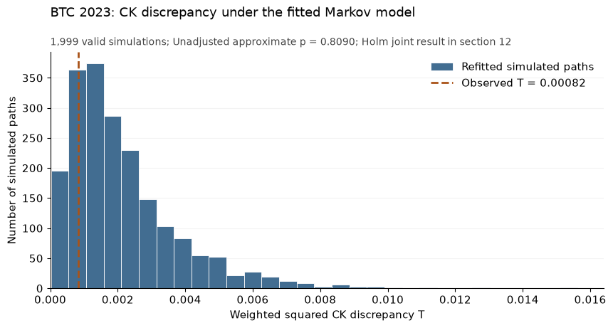
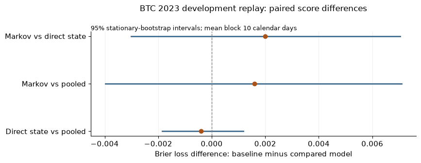
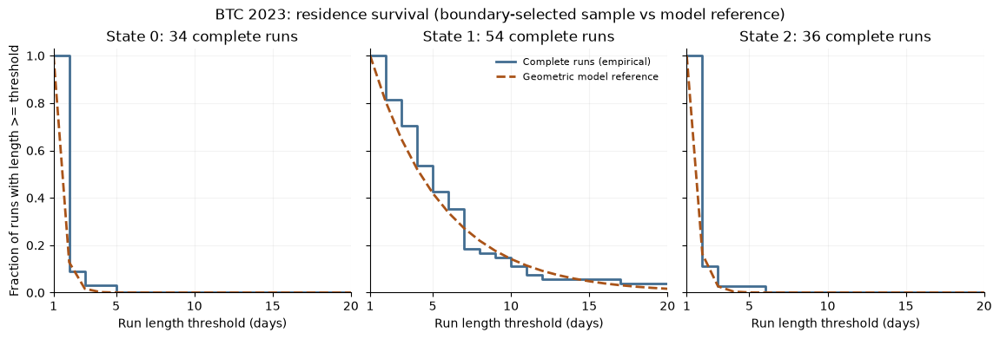
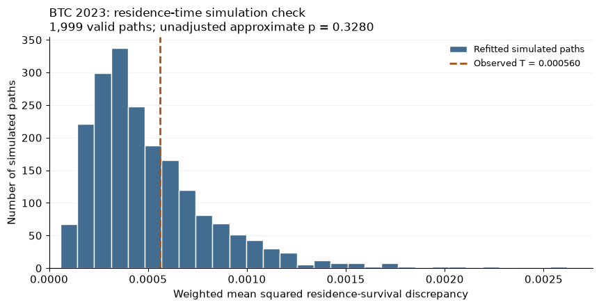

BTC Markov 项目中文代码学习手册
这份手册帮助你从原始日线文件，一直读到马尔可夫模型、风险预测、结构检验和正式样本外评估。目标是：打开 notebook 时，知道每块代码为什么存在、输入是什么、计算了什么、输出该怎么解释；面试时可以把公式和实现对应起来。
**代码版本：**本地项目 btc_markov，Part A 冻结提交 af49df367c9792054b7a9cd8a90951dd1719d22c，主 notebook 已保存的 52 个代码块。本手册按这些代码块的 In[1] 到 In[52] 编号解释。Jupyter 的 In[...] 实际上是执行计数；如果乱序重跑，数字可能改变。届时请同时用“章节名称＋函数名”定位。
**阅读边界：**正文中的实际数值来自已经看过的 2020–2023 开发数据；这份手册在正式 holdout 评估前完成。它不预设新数据的结果。实际评估记录另存于 results/holdout_evaluation/，以其中 status.json 的完成状态为准。
本文件依照你的最新要求用中文撰写，作为项目原先英文文档约定的学习材料例外。研究代码、冻结协议和正式结果仍保持英文。
先用十分钟建立全局地图
我们最终想回答什么
主问题是：知道今天的离散市场状态后，用马尔可夫转移模型，能否比直接按当前状态统计历史事件频率，更准确地预测未来五天内出现负向冲击的概率？
这里的“负向冲击”有精确定义：某一天的收益除以前二十天收益的样本标准差，得到的值不大于 −1。它不是“累计跌了百分之几”，也不是盘中跌破某条价格线。用标准化单日收益定义事件，是为了让不同时期的波动尺度可比较。
项目有两条相互独立的线：
| 部分 | 问什么 | 代码在哪 | 使用哪些数据 |
|---|---|---|---|
| Part A 预测 | 三个概率预测器谁的 Brier 损失更小？差异是否得到区间支持？ | 主 notebook 第 8–10 节；共享状态与矩阵函数在前面；gate 负责正式运行 | 开发期检查实现；冻结后对锁定的 2024–2026 区间评估一次 |
| Part B 结构 | 观测状态序列是否明显偏离齐次一阶马尔可夫链的两个必要性质？ | 第 7 节 CK、第 11–12 节停留时间与 Holm | 只用 2020–2023 |
Part B 不拒绝，只能说这些诊断没有发现足够明显的偏离，不能说“证明了市场是马尔可夫链”。Part A 没有显著改善，也不能说“所有状态信息都没用”。模型近似不完全成立，仍可能预测得不错；结构检验没拒绝，预测也可能输给简单基准。两条线要分别陈述。
一条数据流水线
Binance 每月一个 ZIP，每行是一根 UTC 日 K 线
│ 校验 checksum、日期、缺口
├─ 2020–2023 → 每个币种一份开发 CSV → 数据核对 notebook 00
└─ 2024–2026 → 独立存放 ZIP，只核对时间戳，等待评估 gate
close C_t → return r_t → lagged sigma_t → z_t → state S_t ∈ {0,1,2}
│
┌────────────────────────────┴─────────────────────┐
│ │
Part A：每天按当时信息生成预测 Part B：固定开发窗口
过去365天的状态和已成熟标签 估计原始 P
→ Markov / pooled / state → CK 与停留时间统计量
→ 同一个未来五天 Y_t → 模拟并校准 p 值
→ 损失、配对区块 bootstrap、结论 → Holm 校正
这不是用 2023 年预测 2020 年
开发分析中，2023 是我们先拿来讲解的一段固定样本。对它做 CK 或停留时间检验，是检查这一段序列内部的结构，不是用它“预测过去”。后来单独对 2020、2021、2022 和合并开发期做诊断，也是在各自窗口内重新估计和检查。
2023 的滚动预测则是另一件事：对 2023 每个预测日期，代码只让模型使用那一天已经知道的信息。早期预测需要 2022 年的历史，后期预测逐渐用到已经发生的 2023 数据。这叫按时间向前的历史回放。
2020–2023 都是 development，不是未接触的 test。 旧实验已经看过 2023，它也影响过设计；我们不会把它重新包装成独立样本外结果。真正的 holdout 是冻结后由 gate 打开的 2024 年以后的区间。滚动模型进入这个区间后可以利用已经发生的过去数据更新参数，但不能利用评估结果重新挑模型、窗口或阈值。冻结的是整个更新规则，不是一张永远不变的矩阵。
文件夹里各类文件负责什么
项目根目录：/Users/zhangzhenyi/Documents/Quant/btc_markov。
| 路径（相对项目根目录） | 你打开它是为了什么 |
|---|---|
notebooks/01_states_and_first_passage.ipynb |
主研究代码；面试展示的核心，数学函数按解释顺序放在里面 |
notebooks/01_states_and_first_passage.html |
已保存代码和开发结果的阅读副本，不是重新计算 |
notebooks/00_data_audit.ipynb |
看开发数据与导师数据是否一致，以及下载日历是否完整 |
tools/download_binance.py |
下载、校验 ZIP；开发期拼接成每币种一份 CSV |
tools/reconcile_development.py |
按“币种＋日期”核对开发数据和导师数据 |
tools/audit_download_coverage.py |
只读下载元数据，检查日期覆盖，不检查价格 |
tools/build_data_audit_notebook.py |
生成并执行 notebook 00 的脚本 |
tools/part_a_gate.py |
冻结检查、日历锁定、唯一一次正式评估；不另写一套预测公式 |
research/part_a_config.json |
Part A 的数字设置，例如 365 天、5 天、log_clip |
research/part_b_config.json |
Part B 的窗口、模拟次数、停留时间比较范围 |
research/protocol_part_a.md / protocol_part_b.md |
方法为什么这样规定、边界如何处理、什么结果允许什么结论 |
research/part_a_freeze_manifest.json |
冻结时文件指纹、函数指纹、运行环境 |
tests/ |
用人工构造的例子检查代码是否按定义工作 |
data/development/ |
已导出的开发 CSV 和原始月 ZIP |
data/holdout_sealed/archives/ |
评估前隔离的新区间 ZIP；不预先做价格探索 |
results/part_b_development/ |
已完成的结构诊断、模拟统计量、停留段和输入记录 |
results/part_a_calendar_decision/decision.json |
10 月 7 日锁定的数据截止日期和依据 |
results/holdout_evaluation/ |
gate 运行后保存所有三币种的预测、标签、损失和结论 |
docs/code_guide_zh.md / .html |
本手册；HTML 有目录、搜索和代码索引链接 |
docs/code_reference.html |
全量代码对照本，按 notebook 代码块、脚本、测试文件展开 |
research/status.md 是项目进度说明，sprint_plan_2026_10.md 是计划。计划日期不代表工作已经完成；正式结果应查实际运行记录。
建议分几次读
- **第一次：**本章＋第 1–6 节。你应能手算一张转移矩阵和五日首达概率，解释
Q为什么不能重新归一化。 - **第二次：**第 8–10 节。你应能从某个“今天”的角度，指出哪些转移和哪些标签能用，解释三种预测器与配对评分。
- **第三次：**第 7、11–12 节。你应能模拟一条路径，解释为什么重新估计参数，以及 p 值和预测差异区间的区别。
- **第四次：**工具脚本、测试、正式评估输出。面试最需要说清数据来源、时间边界、因果性和证据记录，不必背网络下载的每一行。
看代码前要认识的对象和语法
数据表中的列
下面是下载脚本实际导出的十列。以 BTCUSDT 为例，base asset 是 BTC，quote asset 是 USDT；报价是“每 BTC 多少 USDT”，不能无条件等同为美元价格。
| 列名 | 含义 | 单位或注意点 |
|---|---|---|
date |
这根 UTC 日 K 线的开始日期 | 对应一个日桶；不是芝加哥本地交易日 |
open |
日桶内第一笔成交价格 | USDT / BTC |
high / low |
日桶内最高／最低成交价格 | USDT / BTC |
close |
日桶内最后一笔成交价格 | 我们用于计算每日收益；不是当日均价 |
volume |
日桶内成交的基础资产数量 | BTC，可以有小数；成交量不是交易人数 |
quote_volume |
成交对应的报价资产总额 | USDT；不能一般写成 volume * close |
n_trades |
成交笔数 | 整数；不是下单数或独立参与者数 |
taker_buy_base |
买方主动成交对应的基础资产量 | BTC，是总基础成交量中的一部分 |
taker_buy_quote |
买方主动成交对应的报价资产额 | USDT，是总报价成交额中的一部分 |
“主动买入”指买方订单立即与已挂着的卖方流动性成交。每笔交易当然仍同时有买方和卖方；这两列区分的是谁主动消耗了挂单，不是存在“只有买、没有卖”的成交。
加密资产日线用人为划分的 UTC 日桶组织连续交易，不要求交易所每天收盘停止交易。下一日 open 与前一日 close 是边界两侧的不同成交，可能接近，但没有必须相等的数学约束。股票的次日开盘也不要求等于前日收盘；我们这里不把股票的交易时段结构套用到加密日线。
例：一笔 0.2 BTC 以 50,000 USDT/BTC 成交，另一笔 0.1 BTC 以 51,000 成交。这两笔贡献的 volume 为 0.3 BTC，quote_volume 为 15,100 USDT；即使最后价是 51,000，也不能用 0.3×51,000 替代真实成交额。这个例子只说明单位，不是项目里的某一天。
Series、DataFrame 和 ndarray
pd 是 pandas 库的简称，不是一种变量类型。ret 通常是 pd.Series：一列数加上日期索引。pd.DataFrame 是多列表。np.ndarray 是 NumPy 的多维数组，通常用整数位置取数，不自动按日期对齐。
| 对象 | 常见形状 | 数学含义 |
|---|---|---|
close、state |
长度 n 的 Series | 按日期排列的价格／状态 |
features |
n 行，若干列 | 每天的价格、收益、波动率、标准化收益和状态 |
counts、P |
3×3 | 转移次数／从行状态到列状态的概率 |
Q |
2×2 | 保留状态 1、2 的转移子矩阵 |
| 模拟路径数组 | B×n | 每行一条完整模拟状态路径 |
| 评分 bootstrap 的索引数组 | B×T | 每行一个重采样日期位置序列，不是模拟市场价格 |
代码里的 np.nan、pandas 的 pd.NA 都表达“不可用”，不是数值 0。尤其 Y=0 是完整观察五天后确认没有事件；Y 缺失是不能按定义确定或不适用，两者不能混为一谈。
最常出现的语法对照
| 代码 | 读法 | 最容易错的地方 |
|---|---|---|
x.loc[start:end] |
按标签取范围 | 日期切片通常包含两端 |
x.iloc[a:b]、arr[a:b] |
按位置取 a 到 b−1 | 右端不包含 |
x.shift(1) |
在今天这一行放昨天的值 | 用来严格排除当日收益进入当日 sigma |
x.shift(-k) |
在今天这一行放未来第 k 天的值 | 可用于事后造标签，不能直接当作预测信息 |
rolling(20, min_periods=20) |
每次取最近二十个位置，要求二十个有效值 | 没满窗口或中间缺失不会硬凑结果 |
A.sum(axis=1) |
对每一行，把各列加起来 | 结果是每个起点状态的总次数 |
A.sum(axis=0) |
对每一列，把各行加起来 | 结果是每个终点状态的总次数 |
row_totals[:, None] |
从长度 3 变成 3×1 | 使每一行除以自己的总数，称为 broadcasting |
A @ B |
矩阵乘法 | A * B 是逐元素乘法 |
np.linalg.matrix_power(P, 5) |
矩阵五次乘积 | P ** 5 是逐元素五次方，完全不同 |
mask、&、\|、~ |
每行一个真假；并且、或者、取反 | 对 Series 不用 Python 的 and / or 替代；条件加括号 |
np.flatnonzero(mask) |
找到 True 的整数位置 | 它返回位置，不是日期标签 |
.to_numpy(dtype=float) |
从有标签的表转成数组 | 日期对齐责任转给调用代码 |
np.isfinite(x) |
判断是否既非 NaN 也非正负无穷 | 无穷大不能当有效波动率或概率 |
assert 条件 |
内部自检，失败就抛错 | 与输入校验 raise ValueError(...) 的职责不同 |
def f(...): / return ... |
定义计算规则／交回结果 | 定义函数这一格本身通常不产生模型结果 |
dict、JSON |
键对应值；JSON 是可保存的配置格式 | JSON 的 true/null 对应 Python 的 True/None |
Path(...) / 'child' |
拼接路径 | 这里 / 是路径拼接运算，不是数值除法 |
先看函数最后 return 的对象，再沿着代码追溯它的字段怎么得到，通常比从第一行逐字猜更容易。参数校验看似很长，其作用是让“数据不满足定义”明确报错，而不是悄悄给出一个可疑结果。
你见过的几种“加一”，分别是什么
| 位置 | 形式 | 作用 |
|---|---|---|
| 转移概率平滑 | (N_ij+1)/(N_i+3) |
三分类 Dirichlet(1,1,1) 后验均值；每个去向加一个伪计数 |
| 事件概率平滑 | (hits+1)/(n+2) |
形式等同于 Beta(1,1)–Bernoulli 后验均值；此处用于加一平滑，重叠标签并非独立试验 |
| 模拟检验 p 值 | (exceedances+1)/(B+1) |
Monte Carlo 的 plus-one 尾部概率计算；避免有限模拟下报 p=0 |
前两项可称为加一／Laplace 平滑，第三项不是给转移矩阵加先验。结构检验从拟合的零假设模型模拟，因此这里的 p 值仍是近似 bootstrap p 值；仅有 plus-one 并不会把它变成严格有限样本精确检验。
第一部分 notebook 第 1 至 8 节
本章对应主 notebook 的 In[1]–In[26]，按当前保存的顺序阅读。这里的 In 编号是这份讲义的定位标记；你如果单独重复运行某个单元，Jupyter 显示的执行编号可能变化，要同时看代码内容。
这一部分的计算链是：
开发期日收盘价 → 日收益 → 以前 20 日波动率标准化 → 三状态序列 → 转移频数与原始矩阵 → 首次到达概率和 CK 诊断 → 五日事件标签。
前面得到的 2023 年矩阵是使用整年数据的描述性估计。真正按每天信息集生成的滚动预测在后面的 Part A 中。下文引用的数值均来自 notebook 已保存的 2020–2023 开发期输出，没有新增读取留出期数据。
先辨认三个容器：
| 容器 | 可以怎样理解 | 本章例子 |
|---|---|---|
pd.Series |
带索引的一列数据 | 每天一个收盘价、收益或状态 |
pd.DataFrame |
共享行索引的多列表格 | close, ret, sigma, z, state |
np.ndarray |
按位置访问的数值数组，没有日期标签 | 形状为 (3,3) 的转移矩阵 |
df["close"] 取一列；.loc 按日期或标签选择；.iloc 按从 0 开始的位置选择。def 单元只是定义函数，不会立即完成函数体里的计算。return 返回计算结果；display 展示结果；raise ValueError(...) 则明确停止错误输入。
In[1]：导入工具，并指定此次计算的文件和窗口
查看这一格完整代码 ↗输入是当前工作目录，输出是后续要用的模块、路径和三个设置：csv_path、window_start/window_end、horizon。本单元还没有读取 CSV。
Path 把文件路径表示为对象。Path.cwd() 是“运行 notebook 的进程现在位于哪里”，不一定就是 notebook 文件的位置。代码检查当前目录下有没有 AGENTS.md：有就把当前目录作为 ROOT，没有就取上一层。因此，这段简单定位逻辑适用于从项目根目录或其 notebooks 子目录启动；它不是在整台电脑上自动寻找项目。
ROOT / "data/development/..." 中的 / 是路径拼接，不是数学除法。文件名明确限定 BTC 的 2020-01 至 2023-12 开发数据。window_start="2023-01-01" 和 window_end="2023-12-31" 指定本部分的固定诊断窗口；horizon=5 指定五日事件以及 CK 的五步跨度。
np、pd 分别是 NumPy、pandas 的常用缩写。hashlib 稍后生成文件指纹；sys 稍后报告 Python 版本；display 让 Jupyter 显示表格。
日线日期采用 UTC 开盘日期作为行标签。某一天的收盘价和当天状态，要等那根日线收盘才知道。 把索引写成午夜，是统一日期表示，不表示午夜时已经知道当天收盘价。
In[2]：定义日期索引的检查函数
查看这一格完整代码 ↗函数 _validate_daily_index(index) 接收日期索引，通过时返回 None，不通过时抛出异常。下划线开头表示“内部辅助函数”的命名习惯；index: pd.Index 和 -> None 是类型提示，真正执行检查的是函数中的 if。
它依次要求：索引是 DatetimeIndex；没有缺失日期标签、重复或乱序；时区是明确的 UTC，或作为 UTC 日期解释的无时区索引；每天都标记在午夜；相邻行恰好相差一天。
最后一项可以写成数学形式：
index[1:] 去掉第一个日期，index[:-1] 去掉最后一个日期；两者相减得到长度为 N-1 的日间隔数组。.all() 要求所有间隔都合格。
例如，索引是 1 月 1、2、4 日就会被拒绝。正确表达“1 月 3 日数据缺失”的方式是保留 1 月 3 日这一行，把数值写成缺失值。这样后续程序不会把 1 月 2 日到 4 日误算成“一天转移”。日期不存在与日期存在但值缺失，是两种不同问题。
In[3]：先检查日期边界，再解析收盘价
查看这一格完整代码 ↗输入是开发 CSV；输出是以日期为索引、只有 close 一列的 btc 表，以及文件指纹 source_sha256。
resolve() 会解析路径及符号链接，absolute() 给出绝对路径。两者不一致就拒绝本次访问，防止指定的开发路径通过链接指向其他位置。接着 read_csv(..., usecols=["date"], parse_dates=["date"]) 只把日期列解析出来，与完整的 pd.date_range("2020-01-01","2023-12-31",freq="D") 比较。这个区间包含闰年，共 1,461 天。
.equals(expected) 检查的是整个日期序列，而不只是最小和最大日期。因此缺一天、重复一天、顺序变化都会失败。日期检查通过后，程序读取完整文件字节计算 SHA-256，再解析 date 和 close 两列。计算指纹会读取文件字节，但不把它们解释成行情数值。
set_index("date") 把日期从普通列变成行索引；再次检查日期，是为了防范两次读取间文件发生变化。np.isfinite 排除 NaN 和正负无穷；.gt(0) 等价于逐项判断 >0。
保存的前三个收盘价是 2020-01-01 的 7200.85、1 月 2 日的 6965.71、1 月 3 日的 7344.96。head(3) 只是展示前三行，实际 btc 保留整个开发区间。
In[4]：定义收益、过去波动率和三种状态
查看这一格完整代码 ↗本单元定义两个函数，不立即生成 features。
classify_states(z) 接收长度为 N 的标准化收益序列，返回同日期索引的状态序列：
这里的 0、1、2 是类别标签，不是收益大小。状态 1 可以包含小幅下跌和小幅上涨；状态 0 表示相对近期波动率的一次负向冲击，并不表示价格跌了 100%。
pd.Series(pd.NA,...,dtype="Int64") 先创建全部缺失的整数序列。大写 Int64 是 pandas 可以保存缺失值的整数类型。只有 np.isfinite(z) 为真的位置才会被分类，因此无穷和 NaN 不会误入状态 0 或 2。& 是逐元素“且”，两侧条件要各自加括号，不能用标量逻辑的 and 替代。
make_features(close) 先检查日期和观测到的价格，然后计算简单收益：
例如价格依次为 100、110、99，则后两个收益是 10% 和 −10%；两次复利后价格为 99，而不是回到 100。pct_change(fill_method=None) 明确不把缺失价格向前填充。
最重要的一行是：
ret.shift(1).rolling(20,min_periods=20).std(ddof=1)。
shift(1) 让当前行看到的是前一天的收益；随后长度为 20 的滚动窗口在日期 t 包含的是 r_(t−20),…,r_(t−1)，不含 r_t。它计算：
ddof=1 使分母为 20−1=19；min_periods=20 要求 20 个收益全部可用。标准差计算本身减去窗口均值，但随后定义的是 z_t=r_t/σ_t，没有再从当前收益减均值。这是两个不同步骤。
mask(sigma==0) 把零波动率替换成缺失值，避免除以零。最后 pd.concat(...,axis=1) 沿列方向拼接，输出形状为 (N,5) 的表，列名依次是 close, ret, sigma, z, state。这是先在全部允许的历史上算特征，之后再选估计窗口。
In[5]：真正计算特征，并检查首次可用日期
查看这一格完整代码 ↗features=make_features(btc["close"]) 才真正调用上一单元的函数。当前开发文件有 1,461 行，所以 features 也有 1,461 行；前期不可用数据仍保留为缺失。
dropna(subset=["state"]).head(5) 只用于取展示样本，不会把 features 原表中的暖启动日期删掉。style.format 将收益和波动率显示为百分数，将价格显示为两位小数；它改变显示方式，不改变底层数值。
保存结果的首个可用状态出现在 2020-01-22。原因是 1 月 1 日缺少更早收盘价，首个收益是 1 月 2 日；直到 1 月 22 日，才拥有 1 月 2–21 日的完整 20 个过去收益。
例如 1 月 23 日展示 ret=−3.200%、sigma=3.155%、z≈−1.014，所以状态为 0；1 月 26 日 z≈1.044，所以状态为 2。这些显示值经过舍入，实际分类使用未舍入数值，不应拿表中有限的小数位重新判断一个非常接近边界的点。
In[6]：从完整特征中选择 2023 年状态
查看这一格完整代码 ↗features.loc[window_start:window_end,"state"] 得到长度为 365 的 window_states。pandas 的日期标签切片包含起止两端，这与普通 Python 位置切片排除右端点不同。
本单元只选行，没有重新计算波动率。因此 2023 年 1 月初的状态仍可利用 2022 年末已经发生的收益。后续转移计数只使用这 365 个状态；2022-12-31 到 2023-01-01 的跨边界转移不包含在其中。
不要把“计算某天特征所需的先前历史”与“估计 P 所用的状态对”混在一起。它们的时间范围可以不同。
In[7]：把相邻状态对累积成 3×3 计数矩阵
查看这一格完整代码 ↗count_transitions(states) 接收日期完整、状态可缺失的 Series，输出整数数组 counts，形状为 (3,3)，其中：
先把 pandas 序列转为形状 (N,) 的 NumPy 浮点数组，使用 np.nan 表示缺失。values[:-1] 是所有可能的起点，values[1:] 是对应终点；两者长度都是 N−1。complete 是同长度布尔掩码，仅保留两端都存在的相邻对。
手算序列 [1,1,0,2] 得到 1→1、1→0、0→2，所以这三个矩阵格子各加 1。若序列是 [1,缺失,0]，两个相邻对都不完整，不能跳过缺失值后凭空新增 1→0。
np.zeros((3,3),dtype=int) 初始化全零矩阵。np.add.at(counts,(起点数组,终点数组),1) 按每一对索引加一，并能正确处理重复索引。例如 [1,1,1] 有两次 1→1，必须得到 N_11=2。普通高级索引的批量 +=1 在重复索引下未必逐次累积，所以这里专门使用 add.at。
In[8]：展示窗口规模和真实转移次数
查看这一格完整代码 ↗调用上一函数后，保存的输出确认：2023 年有 365 个日状态、365 个可用状态、364 个完整相邻对。N 个观测最多只有 N−1 个一步转移，因为最后一行没有窗口内的下一天。
计数矩阵是：
行代表当天状态，列代表次日状态。例如 N_10=25 表示状态 1 后接状态 0 共出现 25 次。行和分别是 39、282、43，总和 364。行和统计“作为转移起点的次数”，不一定等于该状态在全部 365 天中的出现次数：最后一天也有状态，却不能在此窗口中作为一步转移起点。
pd.Index(...,name=...) 给行列加上可读名称；pd.DataFrame(counts,index=...,columns=...) 只是给原数值矩阵贴上标签。前面的窗口摘要则用 Series(...).to_frame() 显示为单列表。
In[9]：定义原始转移矩阵的估计
查看这一格完整代码 ↗estimate_transition_matrix(counts) 先要求输入是有限、非负、整数值的 3×3 矩阵。转成 float 是为了概率除法；np.floor 检查数值是否仍为整数值，例如 2.5 会被拒绝。
给定起始状态的 Markov 似然含有项 ∏P_ij^(N_ij)。对每一行施加概率和为 1 的约束，得到原始最大似然估计：
counts.sum(axis=1,keepdims=True) 得到形状 (3,1) 的行和，而不是 (3,)；counts/totals 因此通过广播，把每一行都除以该行的总次数。若省掉 keepdims=True，(3,) 数组通常会沿列方向广播，可能得到完全不同的结果。
某行总数为零时，数据没有给出“从这个状态出发”的条件频率，因此函数抛出异常，不擅自填成均匀分布。本部分没有平滑。后面 Part A 的 (N_ij+1)/(N_i·+3) 才是加入 Dirichlet 伪计数的版本，不能把两者当作同一个估计器。
In[10]：得到 2023 年的原始 P
查看这一格完整代码 ↗本单元调用估计函数并展示：
例如 P_10=25/282≈0.0887；P_21=27/43≈0.6279。每行和为 1，列和没有必须等于 1 的要求。
这是一整个 2023 年窗口的条件频率总结。它没有给出估计误差范围，也没有证明这些条件概率全年不变。尤其不能把整年拟合得到的矩阵，当成 2023 年 1 月 1 日就能拿到的预测输入。
In[11]：用 Q 的幂计算五日内首次到达概率
查看这一格完整代码 ↗函数先检查 P 的形状、非负性、有限性和行和；允许浮点运算产生 1e-12 范围内的行和误差。h 必须是非负整数；显式拒绝布尔值，是因为 Python 中 True 也属于整数类型，但不应把它误作预测期限。
从非风险状态集合 {1,2} 取子矩阵：
np.ix_([1,2],[1,2]) 生成行列组合，取出一个 (2,2) 矩阵；直接写两个同长索引数组，可能只取两个配对位置，而不是整个子矩阵。
Q 的行和通常小于 1，少掉的概率对应下一步进入状态 0。不要重新把 Q 的行归一化，否则会把进入目标状态的概率丢掉。
对 τ=min{k≥1:S_(t+k)=0}：
代码中的 np.linalg.matrix_power(Q,h) 是矩阵幂，@ np.ones(2) 是矩阵乘长度为 2 的全 1 向量，结果形状为 (2,)。1−... 对两个分量分别取补概率，最终返回索引为 1、2 的 Series。h=0 时 Q⁰=I，所以到达概率为 0。
直觉上，Q⁵ 累积的只是在接下来五步里一直留在非风险集合的路径；一旦进入 0，这条路径就不再计入 Q 的后续乘法。原来的 P 不需要把状态 0 改成吸收态。
In[12]：把“期间命中”与“第五天落在 0”并排
查看这一格完整代码 ↗endpoint=P⁵[[1,2],0] 取完整三状态矩阵五次幂的两项，表示第五天恰好处于 0。它与上一单元的首次到达事件不同。例如一条路径从 1 出发，未来状态依次是 0,1,1,1,1：五日内命中过 0，但第五天不是 0。
已保存的描述性结果是：
| 起始状态 | 五日内至少一次进入 0 | 第五天处于 0 |
|---|---|---|
| 1 | 41.16% | 10.71% |
| 2 | 49.62% | 10.72% |
第五天处于 0 必然意味着五日内曾进入 0，所以右列不能大于左列。这不是“未来五天累计亏损概率”，也不是已经验证过的预测成绩；它是整年原始 P 在齐次一阶 Markov 假设下的模型含义。
In[13]：直接统计五日间隔的终点转移
查看这一格完整代码 ↗count_lagged_transitions(states,lag=5) 输出 3×3 的五步计数矩阵。与一步计数函数不同，本函数要求整条路径没有缺失状态。它不插值、不跳行。
values[:-5] 与 values[5:] 对齐成 (S_t,S_(t+5))。365 个状态产生 360 对，例如 1 月 1 日对 1 月 6 日、1 月 2 日对 1 月 7 日，直到 12 月 26 日对 12 月 31 日。
这是每天滑动一步的重叠配对，不是把一年分成互不重叠的五日小块。中间四天的状态不直接进入这个端点计数；它也不统计“中途有没有进入 0”。这些重叠对不是独立抽样，后面的整条路径模拟正是保留这种结构的一种处理方式。
In[14]：把 CK 偏离压缩为一个固定统计量
查看这一格完整代码 ↗齐次一阶 Markov 模型满足五步转移关系 P₅=P₁⁵。函数把两种估计并排比较：P1 来自一步计数；P_lag 来自五步端点计数；P_power 是 P1 的矩阵五次幂，不是对每个元素做五次方。
令 n_i^(5) 为五步起点状态 i 的次数，定义：
row_totals、weights 的形状都是 (3,)；P_lag、P_power 都是 (3,3)。row_error 把有五步起点的每行中三个差的平方相加，形状为 (k,)，其中 k 是这样的有效行数；最后 weights[observed_rows] @ row_error 得到一个标量。
如果五步计数某行没有起点，该行保持 NaN，权重为 0，计算时通过 observed_rows 明确排除。不能写成 0×NaN 后期待得到 0，因为浮点运算中它仍然是 NaN。一步矩阵的空行则仍然使原始 P 无法定义。
T 越大表示差异越大，但没有单凭数值大小就通用的显著性门槛。它也不是 Pearson 卡方统计量：这里没有除以预期格子频数。
In[15]：展开矩阵，展示九个端点组合
查看这一格完整代码 ↗本单元调用 ck_statistic，然后用 MultiIndex.from_product 创建九个行标签：(0,0),(0,1),...,(2,2)。ravel() 按行把 3×3 数组展开为长度 9 的数组，因此展开顺序与这些标签一致。
保存的五步计数为：
表中同时显示计数、直接估计的 P₅、P₁⁵ 和两者之差。例如 0→1 的直接估计是 32/39≈0.8205，矩阵幂隐含值约为 0.7747，相差 +4.58 个百分点。
代码乘以 100 是把概率差转换成“百分点”；它不是相对增幅。显示到四位小数或两位百分点，也不改变计算 T 时使用的原始精度。
In[16]：展示权重与 T，理解多数状态的影响
查看这一格完整代码 ↗输出的一步起点次数为 [39,282,43]，五步起点次数为 [39,278,43]。相应五步权重约为 10.83%、77.22%、11.94%。
保存的统计量是 T=0.00082223。状态 1 的权重明显最大，因为它最常作为五步起点出现。这是事先选定的加权方式，会降低稀有状态对总统计量的影响；不是在看到结果之后挑权重。
每行都是两个概率向量之差，其平方距离最多为 2；再做权重和为 1 的平均，T 应在 [0,2] 内。不过，“接近 0”仍需结合有限样本下正常会出现多少波动来判断，不能直接宣布模型通过。
In[17]：从给定 P 模拟整条 Markov 路径
查看这一格完整代码 ↗输入是 P、固定初始状态、路径长度、路径数量和随机种子；输出是整数数组 paths，形状为 (n_paths,length)。本例使用 1,999 条、每条 365 个状态。
default_rng(seed) 创建随机数生成器。固定种子让同样的算法和环境可以复现模拟，不代表生成的路径接近真实未来。所有模拟路径第一列都设为观测窗口的首状态；没有额外烧入期，也没有把路径尾巴接回开头。
程序先生成形状 (1999,364) 的均匀随机数。cumsum(P,axis=1) 把每一行变成累计概率。例如概率行为 [.2,.5,.3]，累计阈值就是 [.2,.7,1]。若 U=.62，它越过一个阈值，下一状态为 1；U=.8 越过两个，下一状态为 2。
最紧凑的那行可以拆成四步理解：
paths[:, t - 1]取所有路径上一时刻状态，形状为 (1999,)。cumulative[这些状态]为每条路径选对累计概率行，形状为 (1999,3)。uniforms[:, t - 1, None]把随机数列变成 (1999,1)，通过广播与三个阈值比较。(...>=...).sum(axis=1)数出越过几个阈值，得到每条路径的新状态。
cumulative[:,-1]=1.0 消除累计浮点误差。np.empty 只分配未初始化内存，所以必须给第一列和随后每一列赋值后再使用整个数组。这里按时间循环，并同时更新全部模拟路径。
In[18]：重新拟合每条模拟路径，校准 CK 统计量
查看这一格完整代码 ↗ck_bootstrap 首先在观测路径上计算 T 和原始 P₁，再用这个拟合矩阵模拟 1,999 条路径。这是参数 bootstrap：模拟来自拟合的概率模型，不是把真实数据行随机洗牌。
最关键的细节是，每条模拟路径都会再次调用 ck_statistic，重新估计自己的 P₁、P₅ 和行权重。如果直接把模拟 P₅ 与原始观测矩阵的五次幂比较，就不是这里规定的统计程序。
enumerate(paths) 每次给出模拟编号 b 和一条状态路径；程序把这条数组包装回带相同日期索引的 Series。模拟统计量数组一开始全是 NaN。若某条模拟路径没有某种一步起点，continue 只跳过其计算，原位置仍保留 NaN，并没有删掉这一条模拟或重新抽取。
全部有效时：
比较使用 >=，把并列值也算作超越；“加一”避免报告零 p 值，最小可能值为 1/2000。但 P 本身由观测数据估计，所以这是复合零假设下的近似校准，“加一”不使它成为有限样本精确检验。
只要有一条模拟不可用，就报告 invalid 数量，并把 p 保留为 NaN；不能只取剩下的有效模拟继续算 p。
In[19]：读取 CK 模拟结果，区分 p 值与模型正确概率
查看这一格完整代码 ↗保存的开发结果为：
| 项目 | 结果 |
|---|---|
| 观测 T | 0.00082223 |
| 模拟数 | 1,999 |
| 不可用模拟数 | 0 |
| 模拟 T ≥ 观测 T 的次数 | 1,617 |
| 未调整近似 p 值 | (1+1617)/2000 = 0.8090 |
解释是：在这个拟合的齐次 Markov 模型下，模拟出的有限样本偏离经常至少与观测偏离一样大。该统计量没有给出强烈的反对证据。0.8090 不是“模型有 80.90% 的概率正确”，也不证明预测有效。
ck_valid 取有限模拟值供下一单元画图；p 值已经在函数内按完整规则计算，不能拿画图筛选代替 p 值规则。
表里的 Pending residence-time diagnostic 是此单元代码固定写入的局部流程提示，表示读到这里尚未组合第二项诊断。项目后来已经完成的 residence 和 Holm 结果应看第 12 节；这条文字不是整个项目的实时进度。
In[20]：画模拟分布，并标出观测统计量
查看这一格完整代码 ↗%matplotlib inline 是 Jupyter 的魔法命令，不能原样当作普通 Python 语句运行。plt.subplots 创建画布 fig 和绘图区 ax；rc_context 临时设置字体、边框等风格，退出后恢复原设置。
直方图横轴是模拟出的 T，纵轴是落入每个区间的模拟路径数。bins=30 只控制图形显示的分组，不参与统计量或 p 值计算。虚线 axvline 标记观测 T。即使某些模拟无效，图可以展示有效部分，但标题会明确 p 被暂停报告。
transform=ax.transAxes 表示文字位置采用绘图区的相对坐标：x=0 是左边，y=1.03 是上边界稍上方，不是“统计量等于 1.03”。
display(fig) 展示图；plt.close(fig) 释放活动画布，避免重复显示或积累内存，不会删除已经嵌入 notebook 的图片。
In[21]：定义五日事件标签，并保留不可用原因
查看这一格完整代码 ↗make_event_labels(states,horizon=5) 将长度 N 的状态序列变成 (N,4) 的表，包含当前状态、目标 y、目标结束日期和状态说明。它制作的是已经发生后才能完整知道的结果标签，不是预测概率。
{f"day_{k}":states.shift(-k) for k in range(1,h+1)} 是字典推导式。负向 shift(-k) 不改日期索引，而是把未来第 k 天的值搬到今天这一行，于是 future 的形状为 (N,5)。例如在 t 行，day_1 存放 S_(t+1)，而不是 S_t。
可用条件有两个：当前状态属于 {1,2}，且未来五格全部非缺失。future.eq(0).any(axis=1) 判断每行是否至少一次进入 0，再转换为 0/1。虽然 any 可能在部分缺失时也发现已知的命中，代码只对完整未来窗口写入 target，因此不会提前把不完整标签当作可用。
手算一个三步示意：当前为 1，未来 [2,0,1] 得到 target=1；未来 [2,1,2] 得到 0；未来 [0,2,缺失] 仍不可用，尽管已看到早期命中。正式项目期限始终为五天，这个三格例子只是解释操作。
状态说明按以下规则写入：
| label_status | 含义 |
|---|---|
origin_missing |
当天状态未知 |
risk_origin |
当天已处于状态 0，不属于此次预测起点集合 |
incomplete_future |
当前非风险，但五日未来不完整 |
available |
当前非风险且五日未来完整 |
target_end_date=index+5天 对所有行计算，包括不可用行。它是完整观察期的结束日，不是首次命中的那一天。尾部出现 2024 日期只是日历加法，不表示程序读取了 2024 行情。
In[22]：生成全开发区间标签，再展示年初五行
查看这一格完整代码 ↗函数输入是整个 features["state"]，因为后面历史频率也需要 2022 年等更早的标签。展示部分才切到 2023-01-01 至 1 月 5 日。
保存结果中，这五个起点都是状态 1，target 都为 0，结束日期依次是 1 月 6–10 日。例如 1 月 1 日的 target=0，表示 1 月 2–6 日完整可见，且这五个状态都不为 0；不是说 1 月 1 日当天没有冲击就足够了。
离线构造标签可以使用未来结果；实时预测不能提前使用这些标签。是否泄漏取决于之后把哪些已成熟标签纳入估计，In[25] 就专门示范这一层筛选。
In[23]：统计 2023 年的标签可用性
查看这一格完整代码 ↗value_counts() 统计每种说明出现多少次；reindex(status_order,fill_value=0) 强制使用预定的四种顺序，并把未出现类别补为 0。否则零次类别可能直接不显示。
保存结果是：
| 可用情况 | 日期数 |
|---|---|
| available | 321 |
| risk_origin | 39 |
| origin_missing | 0 |
| incomplete_future | 5 |
| 合计 | 365 |
这解释了为何不是每天都能评分。321 是“已拥有完整标签且起点非风险”的数量；后续预测还有转移次数和历史标签数量的门槛，不能仅凭此表就断言任何预测方法都已在全部 321 天产生有效预测。
In[24]：检查年底尾部，避免把未知结果编码成 0
查看这一格完整代码 ↗tail(7) 展示最后七行。保存结果中，12 月 25 日状态为 1，target=1，完整期限到 12 月 30 日；12 月 26 日状态为 0，所以 target 不可用，原因是 risk_origin，虽然期限仍可写为 12 月 31 日。
12 月 27–31 日的期限分别延伸到 2024-01-01 至 1 月 5 日。开发数据截至 12 月 31 日，因此这些行 target 必须缺失，不能写成“没有发生事件”的 0。
本数据中最后五个起点都是非风险，所以五行都标为 incomplete_future。一般情况下，尾部若有状态 0，其原因仍应是 risk_origin；“最后五天没有完整 target”不等于“最后五天的说明一定相同”。
In[25]：用一个明确的信息截止日筛选成熟历史
查看这一格完整代码 ↗取 as_of=2023-01-01，往前数含今天共 365 个起点日期：
程序同时要求起点不早于 history_start、不晚于 as_of、target 非缺失，而且 target_end_date≤as_of。最后一个条件保证这五天结果在当时已经全部发生。
由于 h=5，最晚可能成熟的起点是 2022-12-27，其结束日期为 2023-01-01。2022-12-30 即使已经提前看到一次命中，也不能绕过完整五日成熟规则。
保存结果保留 312 个历史标签，最晚保留起点恰为 12 月 27 日，最晚结果日期恰为 1 月 1 日。这里的“最晚可能”与“最晚实际保留”分开报告是有意义的：若边界起点本身是风险状态或缺失，实际保留日期会更早。
这段示例先离线生成全历史标签，再用成熟条件筛选。后面的正式滚动预测实现更显式地先截断到信息日，再制作历史标签。只要严格实施这些边界，两种写法都不能让当前预测读到尚未成熟的结果。
In[26]：检查内部一致性，并留下可复现记录
查看这一格完整代码 ↗本单元没有提出新模型，而是用断言检查前面对象之间是否一致。assert 条件 在条件不成立时抛出 AssertionError；np.testing.assert_allclose 则允许浮点舍入误差。
这些检查可分成四组：
- 输入和矩阵：2023 年 365 个完整状态、364 个一步转移；P 每行和为 1；重新计算文件指纹应与首次读取一致。
- 概率逻辑：hit 在 [0,1] 内；期间命中概率不小于第五天端点概率，允许
1e-12的浮点误差。 - 标签与成熟日期：状态统计总和为 365；非缺失 target 只能是 0/1；target 存在与
available完全一致；最后五行 target 缺失；结束日始终是起点加五天；风险起点没有 target；历史标签没有越过信息截止日。 - CK 计算：五步对数为
365−5=360；CK 内部的一步 P 与前面的 P 相同；T 在 [0,2] 内；保存 1,999 个模拟位置；若存在无效模拟，p 必须缺失。
.equals 在这里检查两个布尔 Series 的索引和取值是否一致；.between(0,1) 是逐项区间检查；.le(as_of) 等价于逐项 <=as_of。这些都是把数学约束写成可以自动执行的检查。
保存的输出显示上述检查通过，并记录了开发文件路径、完整 SHA-256，以及 Python 3.12.14、NumPy 2.3.5、pandas 2.2.3、Matplotlib 3.11.2。这些是该次保存运行的环境记录，不是对当前软件最新版本的建议。
断言通过说明实现满足这些内部约束，不等于统计假设为真。 读完这一部分，你应能够沿着任意一个日期说明：价格如何变成状态；某个转移计数怎样增加；一个五日标签什么时候才可用；以及为什么整年描述性 P、参数 bootstrap 诊断和逐日预测是三个不同用途。
第二部分 notebook 第 9 至 10 节
本章对应主 notebook 的 In[27]–In[40]：从固定参数、三个逐日预测器，到共同评分、配对区间及开发集展示。编号指本次已保存 notebook 的执行编号；重新运行部分单元格可能改变编号，因此也要结合下面的函数名定位。
来源是 notebooks/01_states_and_first_passage.ipynb 中相应单元格的源码及已保存输出，以及 research/part_a_config.json、research/protocol_part_a.md。本章没有重新执行 notebook，没有读取封存行情。下文列出的真实数值均来自已经保存的 BTC 2023 开发集回放；示意数值会另行标明。
先看这十四格共同完成什么
你已经有一条按日期排列的状态序列 states。现在每天收盘后，要回答：如果今天是状态 1 或 2，接下来五个每日收盘状态中，至少一次进入状态 0 的概率是多少？
记事件为
状态 0 表示按项目定义标准化后的一日负向冲击。这不是“未来五天累计收益为负”，不是“第五天处于状态 0”，也不是盘中触及某个价格。三个模型预测完全同一个二元事件。
计算链可以读作：
已授权 close 序列
→ make_features：收益、过去波动率、状态
→ rolling_forecasts：在每个历史信息时点生成三个概率
→ make_event_labels：事后记录实际五日事件
→ score_forecasts：同一批日期评分、校准、配对重抽样
→ evaluate_asset：把上述输出合并成八张表
Series 是有索引的一列；这里通常以日期为索引。DataFrame 是多列共享索引的表。NumPy 的 ndarray 是按位置计算的数组，没有 pandas 的日期和列名自动对齐。本章先用 pandas 管日期和标签，到批量重抽样时再转为 NumPy 数组。
还要区分两种时间：发出预测的日期 t，与之后才知道的结果日期 t+5。预测函数不能读取当前预测的未来答案；评分函数必须使用答案，才能判断预测质量。按历史时点回放，就是在今天已有完整历史文件的情况下，仍要求每个过去的预测仅用当时可获得的信息。
In[27]：读取并展示固定配置
查看这一格完整代码 ↗输入： ROOT 指向项目根目录，配置存在 research/part_a_config.json。
part_a_config = json.loads((ROOT / "research/part_a_config.json").read_text())
这里 / 是 pathlib.Path 的路径拼接运算；.read_text() 读取文字；json.loads() 将 JSON 文字转换成 Python 字典。此后 part_a_config["horizon"] 就取出数值 5。变量不是一张结果表，而是一组控制计算规则的参数。
展示行中的 {key: str(value) for key, value in part_a_config.items()} 是字典推导式：逐个拿出键和值，将值转成便于显示的字符串，再包装成 Series 和单列表格。它只转换展示用副本，没有把原配置中的数字变成字符串。display(...) 负责在 notebook 中显示，不负责拟合模型。
| 参数 | 当前值 | 控制什么 |
|---|---|---|
horizon |
5 | 未来事件包含五个每日状态 |
window_days |
365 | 每个预测日的历史日历窗口 |
dirichlet_alpha |
1 | 每个转移目的状态增加的伪计数 |
beta_alpha, beta_beta |
1、1 | 历史事件频率的成功／失败伪计数 |
min_pairs |
250 | 历史有效相邻状态对的总数下限 |
min_source_pairs |
20 | 状态 1、2 各自作为转移起点的数量下限 |
min_labels |
100 | 已成熟非风险标签总数下限 |
min_state_labels |
20 | 状态 1、2 各自已成熟标签数下限 |
log_clip |
1e-12 |
仅计算 log loss 时避免对 0 取对数 |
calibration_bins |
10 | 固定等宽概率分箱数量 |
bootstrap_samples |
2000 | 配对日历区块重抽样次数 |
bootstrap_mean_block |
10 | 每块的平均日历长度，不是固定长度 |
bootstrap_seed |
20261007 | 固定随机数生成器起点 |
ci_level |
0.95 | 区间取 2.5% 与 97.5% 分位数 |
输出： 一个可供后续函数使用的字典，以及配置展示表。配置是已经固定的实验规则，不是让读者根据结果试调的菜单。365 天、阈值和区块长度都是本项目的既定选择，并不等于已经证明它们最优。
In[28]：_validate_prediction_config 检查参数能否合法计算
查看这一格完整代码 ↗
输入： 配置字典。输出： 合法时正常返回 None；不合法时抛出 ValueError，让调用停止。
这格执行 def 时只是定义函数，尚未验证某一份配置。后面调用 rolling_forecasts(...) 等函数，才会执行它的函数体。
第一个 for key in (...) 依次检查应为正整数的字段。isinstance(value, (int, np.integer)) 同时接受 Python 整数和 NumPy 整数。前面的布尔检查很必要：Python 中 True 可以表现得像整数 1，但把“是否”误填进“天数”不是合理配置。
接下来分别检查：历史窗口必须长于预测期；平滑参数与平均区块长度必须为有限正数；平均区块长度至少为 1；log_clip 在 0 与 0.5 之间；置信水平在 0 与 1 之间；随机种子是非负整数。np.isfinite 排除 NaN 和正负无穷；raise ValueError(...) 给出停止原因。
这一格检查的是数值合法性，不是冻结身份。 例如把合法窗口改成另一个大于 5 的整数，单靠此函数不一定报错；是否与冻结版本完全相同，由另一个 gate 的内容哈希检查负责。也不要把参数检查理解为模型假设已经获得验证。
In[29]：smoothed_transition_matrix 从计数得到平滑转移矩阵
查看这一格完整代码 ↗
输入： 一个 3×3 转移计数矩阵 counts，行是当前状态、列是下一状态；以及伪计数 alpha。输出： 一个 3×3 的浮点概率矩阵，每行和为 1。
np.asarray(counts, dtype=float) 将输入规范成浮点数组。检查同时要求形状为 (3, 3)、元素有限、非负且为整数值。np.floor 向下取整，和原值逐项比较，用于排除 1.5 这类不能作为观测次数的输入。虽然内部存成浮点数，计数仍必须具有整数意义。
核心只有一行：
(counts + alpha) / (counts.sum(axis=1, keepdims=True) + 3 * alpha)
对应
axis=1 沿每一行的列方向求和；keepdims=True 使分母形状保留为 (3,1)，而不是 (3,)。NumPy 随后把每行的同一个分母广播给该行三个元素。保留这一维可以避免误把三行分母按列使用。
以示意行 [3, 1, 0]、alpha=1 为例，输出为 [4/7, 2/7, 1/7]。若整行为零，输出 [1/3, 1/3, 1/3]。这就是每个目的状态都加一个伪计数；在逐行多项分布与对称 Dirichlet 先验的模型下，可解释为后验均值。但程序此处只返回一个平滑点估计，没有返回“模型为真”的概率或预测优势的后验概率。
平滑防止小样本中的偶然零计数变成严格零概率，却不能替代足够数据。后面的预测资格检查仍然要求一定数量的观测。也要与 Part B 区分：结构诊断使用的 raw MLE 不加这层平滑；两部分研究问题不同。
In[30]：historical_frequency_baselines 统计已经知道答案的历史事件
查看这一格完整代码 ↗
输入： 状态序列、当前信息日期 as_of 和配置。输出： 字典，包含成熟标签数、命中次数、最近标签日期、pooled 概率及两个状态组的概率。
函数先验证配置和日历，再用 pd.Timestamp(as_of) 规范日期。as_of in states.index 确保信息日确实存在。随后：
history_start = as_of - pd.Timedelta(days=config["window_days"] - 1)
history = states.loc[history_start:as_of]
Timedelta 表示时间长度。pandas 的日期 .loc[起点:终点] 包括两端，所以 [t-364,t] 恰好是 365 个日历日。若可用历史更短，切片不会自动补出旧观测；是否够用由后续计数下限决定。
先截取 history，再调用 make_event_labels(history, horizon=5)，是防止未来信息进入历史频率的关键顺序。成熟集合的选择条件为：
labels["target"].notna() & labels["target_end_date"].le(as_of)
.notna() 检查标签已有值；.le(as_of) 逐项比较是否不晚于信息日；& 对两个布尔序列逐项取“且”。只有非风险起点、五天后续状态完整、并且五日窗口已经结束的标签，才能进入统计。
例如在 2023-01-01 那根日线收盘后，历史窗口是 2022-01-02 至 2023-01-01。最晚可以使用的历史标签起点是 2022-12-27，其五个未来状态对应 12 月 28 日至 1 月 1 日。12 月 30 日的五日窗口尚未成熟，即使 12 月 31 日已经出现冲击，也不提前纳入。否则“提前发生的正例”会比“尚未完成的负例”更早进入训练统计，改变样本规则。
设成熟标签有 n 个，其中 h 个命中，则
代码先用 len(mature) 数行，再用 target.sum() 对 0/1 求和数命中。latest_label_origin 是这些起点的最晚日期，latest_label_end 是这些标签的最晚完成日期，专门保留供后面审计。无成熟标签时，相关最晚日期为缺失时间，不能当作已有训练证据。
for state in (1, 2) 分别取出历史起点状态为 1、2 的子集，计算
这里的 f"n_labels_{state}" 是格式化字符串：循环到状态 1 时变成键 n_labels_1。.eq(state) 是逐项相等比较，.loc[...] 用布尔条件选行。a,b 表示成功与失败的伪计数；当前均为 1。这种加一平滑有 Beta–Bernoulli 模型下的后验均值形式，但历史五日标签相互重叠，不应据此宣称程序得到了独立 Bernoulli 样本的完整后验不确定性。
pooled 的“合并”只是在历史非风险起点中暂不区分状态 1 和 2，并不把状态 0 起点也加入。direct-state 则直接估计“以前从今天这个状态出发，五天内有多少次命中”。它不需要构造转移矩阵，更不是用因子分位数设交易阈值。
例如一个示意历史集合有 120 个成熟标签、48 次命中，其中状态 1 有 100 个／35 次，状态 2 有 20 个／13 次。pooled 是 49/122；状态 1 概率是 36/102；状态 2 是 14/22。今天在状态 1 时将使用状态 1 的概率，但两组样本数都仍须达到门槛。
这个函数只提供计数和候选概率，不负责最终宣布“今天可以预测”。即使某组没有标签，公式也能给出 0.5，但后面的资格检查会拒绝把它作为数据足够的正式预测。
In[31]：rolling_forecasts 按信息时点生成三个概率
查看这一格完整代码 ↗
输入： 状态序列、预测起止日期和配置。输出： 每个日历预测日一行的 DataFrame，包括历史样本数、资格、排除原因和三个概率。
函数首先要求索引连续，并且所有已观测状态都在 {0,1,2}。这里允许序列中明确保留缺失状态，随后按规则处理；不允许删除缺失日期使两个不相邻日看起来相邻。start、end 必须确实在状态日历中，且顺序正确。
rows=[] 建立空列表；for today in states.loc[start:end].index 逐日循环。每一天重新截取 [today-364,today]，重新调用 count_transitions、历史频率函数，因而矩阵和频率随日期更新。整个文件可以包含未来日期，当前这次估计读取的只是截至 today 的切片。
counts.sum(axis=1) 得到每个状态作为转移来源的数量。完整 365 日窗口最多有 364 对相邻状态，不能把 365 个状态当成 365 次转移。两端都必须在窗口内，缺失状态不能被跨越连接。.at[today] 按日期取单个当前状态。
reasons=[] 收集全部不合格原因，而非遇到第一条就停止。规则是：
| 检查 | 不满足时记录 |
|---|---|
| 今天状态已知 | origin_missing |
| 今天是状态 1 或 2 | 状态 0 记 risk_origin |
| 有效相邻对总数至少 250 | insufficient_pairs |
| 来源状态 1、2 各自至少 20 对 | insufficient_source_1/2 |
| 成熟标签总数至少 100 | insufficient_labels |
| 起点状态 1、2 各自至少 20 个成熟标签 | insufficient_labels_1/2 |
状态 0 没有另设 20 对来源门槛；平滑为它定义概率行。但非风险两组均要达标，即使今天只在其中一个组。共同资格防止某模型只在更容易的日期留下结果。
not reasons 在列表为空时为 True；"|".join(reasons) 把多个原因串成一个字符串。row 字典先把三个 q 设为 np.nan，表示尚无可用预测。**{...} 是字典展开：把指定频率统计字段并入当前行，而不是另建一个嵌套表。
只有 if not reasons: 成立，才计算三个最终概率：
q_markov：平滑转移矩阵后，调用前面已经解释的 first-passage 函数，取当前状态对应分量。q_pooled：直接取合并历史成熟标签的频率。q_state：用int(current)选择状态 1 或 2 的频率。
Markov 概率是
其中 Q_t 是保留状态 1、2 后的子矩阵，不重新归一化。Q_t^5 保留五步始终未离开非风险集合的概率质量，取补集才是“至少命中过一次”。虽然估计矩阵每天更新，这一次五步预测仍把当天估得的矩阵固定用于五步，是一个局部同质近似。
循环末尾 rows.append(row) 留下当天记录；pd.DataFrame(rows).set_index("date") 把记录列表合成以日期为索引的表。astype("Int64") 使用 pandas 可空整数类型，既保留整数状态，也能表示缺失；它不同于不能直接容纳 pd.NA 的普通整数数组。
被排除的日期仍在表中，三个概率都是缺失。 当前预测的未来标签完全不需要传进来。另一个容易忽略的区别是：转移估计能使用截至今天的相邻对，历史五日标签只能使用已成熟的起点；三个模型拥有同一信息截止日，却不拥有完全相同的训练记录。
In[32]：只看第一天，检查时间和计数是否直观
查看这一格完整代码 ↗输入： 已有 features["state"]，起止日期都设为 2023-01-01。计算： 调用刚定义的滚动函数，只生成一行。输出： first_forecast.T 将行列转置，便于逐个阅读字段；.T 不改变预测本身。
保存结果为：今天状态 1；历史始于 2022-01-02；有效转移对 364；状态 1、2 的来源数量分别为 276、40；成熟标签总数 312，其中两组为 272、40。最晚成熟起点为 2022-12-27，最晚标签完成日为 2023-01-01。
这一天全部门槛通过，三个概率为：Markov 0.489430，pooled 0.461783，direct-state 0.463504。这三个数不是三种不同收益率，也不是准确率，而是同一五日事件的概率预测。它们不同，只说明估计方式不同；现在还没有用这一格判断哪一个更好。
In[33]：stationary_bootstrap_indices 生成保留日历邻接的抽样位置
查看这一格完整代码 ↗
输入： 完整日历长度 n、重抽样次数 n_resamples、平均区块长度 mean_block、种子。输出： 形状为 (n_resamples,n) 的整数位置数组；不直接返回价格或分数。
先检查长度和次数为正整数、种子非负、平均区块长度有限且至少为 1。np.random.default_rng(seed) 创建本地随机数生成器；同一输入与受控运行环境下可重复生成同一组随机索引。种子不是额外的随机样本，也不会令估计没有误差。
indices = np.empty((n_resamples, n), dtype=int)
indices[:, 0] = rng.integers(0, n, size=n_resamples)
np.empty 分配空间，初始内容未定义，必须在使用前全部写入。[:,0] 取所有行的第零列，即每条重抽样路径的第一个位置。每条路径都从 0,...,n-1 均匀选一个位置，右端 n 不包括在 rng.integers 的取值范围内。
之后每一步，restart = rng.random(n_resamples) < 1/mean_block 为每条路径独立决定是否重新开始一个块；starts 提供重新开始的位置。核心是：
np.where(restart, starts, (indices[:, position - 1] + 1) % n)
np.where(条件,A,B) 逐元素选择：需要重启就取新位置，否则向前移动一天。% n 是取余数，所以走到末尾后回到零，形成 circular 重抽样。平均块长 10 对应每一步 0.1 的重启概率；块长可以是 1、2、20 等，不是把数据硬切成固定十日段。
一个只用于说明机制的索引序列可以是 [3,4,5,0,1,4]：一段连续向前并绕回开头，然后重启到 4。这里重新抽的是已有日历位置，不是在假设日期真的倒流，也不是模拟新的市场状态。
为什么不只保留可以评分的日期再抽？假设原日历第 1、2 天可评分，第 3–8 天被排除，第 9 天再可评分。删除中间六天后，第 2 天和第 9 天会错误地成为相邻位置。保留完整日历，才保留真实的间隔及排除区段。重抽样时碰到排除日期，它仍占一个日历位置，分数仍为缺失。
这里选择区块，是为了部分保留相邻预测损失的依赖：五日事件相互重叠，365 日滚动估计也共享大量历史。平均十天是已定的实践选择，不保证捕捉所有长程依赖或解决非平稳性。
In[34]：score_forecasts 对同一批日期评分并计算配对区间
查看这一格完整代码 ↗
输入： 预测表 forecasts、标签表 labels、配置。输出： 六张表组成的字典：逐日损失、总评分、校准表、模型差异、覆盖率、bootstrap 样本。后面的 In[35] 才把预测与标签补上，合成八张表。
这是最长的一格，可以按下面六段阅读。
34.1 日期对齐与防止比较对象错位
aligned = labels.loc[forecasts.index] 按预测日期提取并排列标签，不是简单把两列按当前行号拼在一起。前置检查要求预测日期都能找到标签行、日历连续、观测标签是 0/1，并逐行确认 target_end_date = origin_date + horizon。
随后检查预测与标签的起点状态相同，已有标签只能来自状态 1、2；预测资格必须是布尔值。.equals(...) 对比两条 Series；.isin([1,2]) 检查成员资格；.all() 表示每项都通过。这里是在检查输入之间的相容性，并没有从标签值重新推导整个未来状态路径；标准调用流程由 make_event_labels 生成标签。
models=("markov","pooled","state") 固定三个模型。[f"q_{m}" for m in models] 是列表推导式，生成三列的列名。所有合格日必须同时拥有三个有限、介于 0 和 1 之间的概率，否则报错。它不允许某个模型悄悄少交几天预测。
34.2 分清“当时能预测”与“后来能评分”
eligible = forecasts["eligible"].astype(bool)
scorable = eligible & aligned["target"].notna()
eligible 只由当时状态和历史样本量决定；scorable 还要求后来获得完整五日标签。一个日期可以有合格预测，但因为数据截止而没有五天答案。daily 保留所有日历日期和 scorable，并写入排除原因：预测不合格时记 forecast:...；预测合格但答案缺失时记 label_unavailable；能评分时记空字符串。
~eligible 是逐项逻辑取反。嵌套 np.where 表达先判断预测资格、再判断标签的顺序，所以这几类是互斥的。
34.3 Brier、log loss 与总表
每个模型都使用同一个 scorable 掩码：
两者都是越小越好。示意：预测 0.8，事件发生时 Brier 为 0.04，未发生时为 0.64；这比简单记录猜对／猜错多保留了置信程度的信息。
代码用原始 q 计算 Brier。仅为 log loss，将 q 夹在 [1e-12,1-1e-12] 内；.clip(...) 返回夹取后的序列，避免 log(0)。np.log1p(-clipped) 计算 log(1-clipped)，是对应的数值函数。.where(scorable) 在不能评分的位置写成缺失，而不是 0 分。
summary 每个模型一行：n 为共同评分日数，brier、log_loss 为均值，event_rate 是同一批标签中 y 的均值，mean_forecast 是该模型 q 的均值。pandas 的 .mean() 默认跳过缺失值；因为三个模型的掩码一致，均值不会混用不同日期。真实事件率三行相同是正常现象，不是重复计算错误。
34.4 十个固定校准箱
for k in range(10) 遍历 k=0,...,9，构造 [0,.1),...,[.9,1]。.ge(lower) 表示大于等于下界，.lt(upper) 表示严格小于上界；最后一箱改成 .le(upper)，把预测值恰好为 1 的情况包含进来。
每个箱输出概率下上界、日期数、平均预测概率和实际事件率。比如一组预测都在 0.4 附近，若长期实际发生比例也在 0.4 附近，就符合校准的直观含义。有限样本中的差距还会受随机性、时间依赖和样本量影响，不能仅看一箱就宣布稳定偏差。
所有箱都保留：空箱 n=0，两个均值是缺失，而非实际事件率为 0。三个模型各十箱，所以完整校准表有 30 行。每个模型按自己的概率分箱，同一个日期在不同模型中可能进入不同箱；箱内样本数无需跨模型一致。
34.5 每天先做配对差，再共享同一组重抽样
pairs 固定三个对比，每项元组是 (被比较模型,基线)。代码明确计算：
所以 markov_vs_state 的正值表示 Markov 的损失更小；state_vs_pooled 的正值则表示 direct-state 更好。正负方向取决于这句减法，不能只凭 vs 猜。
differences 是 (n,3) 表：行是完整日历，列是三个对比；被排除日期的三个差值都是缺失。然后只调用一次索引生成函数，三列共同使用相同抽样位置：
sampled = differences.to_numpy()[indices]
.to_numpy() 移除日期／列名，得到 (n,3) 数组；二维整数索引 indices 的形状为 (2000,n)，取出后 sampled 变成 (2000,n,3)。第一维是第几次抽样，第二维是该抽样里的第几个日历位置，第三维是哪个模型对比。这是理解后面 axis 的关键。
为什么配对？某天的实际事件和难度对三个模型共同存在。先在同一天计算损失差，再一起抽日期，保留了这种对应关系。给各模型单独随机抽一组日期，会让差异混入抽样日期不同造成的波动。
np.isfinite(sampled[:,:,0]).sum(axis=1) 为每次抽样统计能评分的位置数。这里用第一列计数，依赖前面已经保证的三列共同掩码。np.nansum(sampled,axis=1) 沿日历位置求和、跳过缺失，输出 (2000,3)；denominators[:,None] 把 (2000,) 变成 (2000,1)，让每次抽样的同一个分母作用于三个比较。
boot 先全部填为 NaN；np.divide(...,out=boot,where=denominators[:,None]>0) 只在分母大于零的位置写入均值。这样一次抽样若完全抽不到可评分日，就保留缺失，不会因为 nansum 给出零而被误认为“差异刚好为零”。一旦有任何这种无效抽样，代码保留记录并暂停所有区间，不丢弃、不重抽。
这一步没有重新计算状态、没有重新拟合 P，也没有重新生成预测：它对已经得到的预测损失路径作条件重抽样。它与 Part B 的拟合原假设 bootstrap 不同：Part B 从拟合 Markov 链生成新状态路径，并在每条模拟路径上重新估计矩阵及诊断统计量。Part A 这里用 2000 次重抽样取分位数区间，不使用 Part B 的 (1+超过次数)/(1999+1) p 值公式。
34.6 区间、判定及覆盖率
tail=(1-.95)/2=.025。没有无效抽样时，对每一列的 2000 个均值取 np.quantile(...,[.025,.975])，得到百分位区间；NumPy 默认采用线性插值。点估计 delta_brier 是原样本的日差均值，并不是 bootstrap 均值再平均。
判定字符串的顺序很明确：有无效抽样则 unavailable；下端点严格大于 0 则 supports_improvement；上端点严格小于 0 则 supports_worse；其余为 uncertain。包含 0 或端点恰好为 0 都不能支持严格改善。
95% 置信区间不是“真实差值有 95% 后验概率位于此处”，也不是 95% 预测日的损失差分布范围；这里它是指定重抽样方法给出的均值差不确定性区间，其可信程度仍依赖时间依赖与稳定性近似。区间跨零表示证据不足以按此规则判定方向，不表示两个模型等价，也不表示状态完全没有信息。
代码对三项都生成判定字段；协议中只有 BTC 的 Markov 对 direct-state 是主要改善判断。其余 BTC 对比和 ETH/SOL 迁移检查属于描述性结果，不能在主要比较不成功时改用另一项宣布主要成功。Part B 的 Holm 校正也不是这三个评分区间的校正。
coverage 只有一行，记录所有日历起点数、预测合格数、可评分数、预测排除数、合格但标签不可用数。应满足：
forecast_eligible 包含可评分日和合格但标签未完成日，不应再作为独立类别加进上述总和。函数最后返回六张 DataFrame，set_index("model")、set_index("comparison") 分别将模型名和比较名变成方便查找的行索引。
In[35]：evaluate_asset 把整个计算流程连接起来
查看这一格完整代码 ↗
输入： 一条明确获准使用的 close 序列、预测起止日和配置。输出： 八张 DataFrame 组成的字典。
函数依次调用 make_features(close)、rolling_forecasts(...)、make_event_labels(...) 和 score_forecasts(...)。先在全部获准历史上构造特征，再选预测日期，让预测第一天的波动率和历史窗口有可用前史。特征定义已保证当日波动率仅用更早的收益；标签可以使用之后的状态，因为它们仅供成熟历史筛选或事后评分。
最后的
{"forecasts": forecasts_for_run,
"labels": labels_for_run.loc[forecasts_for_run.index],
**scores}
把预测表、按预测日期对齐的标签表，与六张评分表合并。**scores 是字典展开，不是乘方。
| 键 | 行的含义 | 回答的问题 |
|---|---|---|
forecasts |
每个预测日 | 当时知道什么、样本够不够、预测多少 |
labels |
同一批预测日 | 未来五日事件是什么、何时完成 |
daily_losses |
每个预测日，保留排除日期 | 是否可评分、各模型当日损失 |
summary |
三个模型 | 平均 Brier、log loss、样本量与事件率 |
calibration |
三模型 × 十个箱 | 概率分组后，预测与实际是否相称 |
comparisons |
三个比较 | 差值、区间、可用性和方向判断 |
coverage |
一行 | 日历日期如何分到互斥类别 |
bootstrap |
2000 次重抽样 × 三比较 | 区间计算所依据的全部抽样均值 |
这只是一个计算函数，它不会打开文件，也不会替调用者核验数据访问权限、冻结提交或执行日期。真实 holdout 的价格加载由外层 gate 管理；不能因为有这个函数，就绕过 gate 把封存文件读进内存再调用。
In[36]：运行并展示已保存的 2023 开发集回放
查看这一格完整代码 ↗输入： notebook 中已加载的开发期 btc["close"]，预测起点 2023-01-01 至 2023-12-26。计算： 调用完整管线。输出： development_result 字典及评分、覆盖表。
预测到 12 月 26 日，是因为它的第五个后续状态刚好到 12 月 31 日；没有用缺少完整五日答案的年末起点补齐到 365 个预测。1 月 1 日至 12 月 26 日共 360 个日历起点，其中 321 个能评分、39 个因状态 0 排除，标签不可用数为 0。
保存的评分如下，均为开发结果：
| 模型 | 评分数 | Brier，越低越好 | Log loss，越低越好 | 实际事件率 | 平均预测 |
|---|---|---|---|---|---|
| Markov | 321 | 0.253410 | 0.700223 | 45.48% | 42.18% |
| pooled | 321 | 0.255005 | 0.703592 | 45.48% | 41.49% |
| direct-state | 321 | 0.255398 | 0.704392 | 45.48% | 41.65% |
.style.format(...) 只是显示格式：例如小数保留六位、比例显示为百分数、样本数不显示小数。底层数值没有因此被四舍五入重写。读取后续损失差应以原始计算结果为准，不必期待对两项展示值相减总能与差值表最后一位完全一致。
Markov 的平均损失在这段回放中较低，是一个样本事实；是否有足够证据支持稳定改善，还要看下一格的区间。2023 早已参与开发和参考项目分析，不能称为此前未使用的测试集。
In[37]：展示差值与排除原因，避免只看平均分排名
查看这一格完整代码 ↗输入： 上一格的 comparisons 与预测表。计算： 格式化展示，统计排除原因。输出： 三项差异和原因计数。
| 比较，正值有利于左侧模型 | Brier 差值 | 配对 95% 区间 | 已保存判断 |
|---|---|---|---|
| Markov vs direct-state | +0.001988 | [−0.003013, +0.007037] | uncertain |
| Markov vs pooled | +0.001596 | [−0.003967, +0.007086] | uncertain |
| direct-state vs pooled | −0.000393 | [−0.001847, +0.001187] | uncertain |
三项各用 321 个共同评分起点，均没有无效重抽样，区间均包含零。主要比较因此只能说“点估计有利于 Markov，但按既定区间规则仍不确定”。不能只依据正的 +0.001988 写成已经证明改善。
第二条展示语句对 exclusion_reason 执行 .replace("","eligible")，给没有原因的空字符串一个便于阅读的名称；.value_counts() 数每种字符串出现次数；.rename(...).to_frame() 命名并转成表。保存计数为 eligible:321、risk_origin:39。若未来某日期有多个原因，原字段是 原因A|原因B，此处按整个原因组合计数，不是分别拆开后每个原因各数一次。
In[38]：展示校准表，读懂空箱和小样本
查看这一格完整代码 ↗输入： 30 行校准表。计算： 设置边界、样本数、百分比的显示格式。输出： 分模型的十箱校准结果，na_rep="unavailable" 将缺失均值显示为不可用。
保存的 Markov 结果中，[0.3,0.4) 有 113 个日期，平均预测 38.57%，实际事件率 42.48%；[0.4,0.5) 有 197 个日期，平均预测 43.78%，实际事件率 48.73%；[0.5,0.6) 只有 11 个日期，平均预测 50.54%，实际事件率 18.18%。其余箱没有观测。
最后一箱的差距看起来大，但只有 11 个、且事件相互重叠的日期，不能把它读成新的稳定规律，也不能据此回头改分箱或模型来让图更好看。一个模型整体平均预测接近事件率，也不保证所有概率区间都校准良好；这正是保留分箱表的理由。
In[39]：将三项差异画成点和区间
查看这一格完整代码 ↗输入： 已算好的 comparisons。计算： Matplotlib 绘图。输出： 一张开发集比较图，不产生新模型结果。
with plt.rc_context({...}) 临时设置字体、字号和边框；离开代码块后恢复原有绘图设置。fig,ax=plt.subplots(...) 创建图与坐标轴。enumerate(comparison.iterrows()) 按行取出比较名与数值，并用 0、1、2 定位纵坐标。
np.isfinite(ci_lower) 成立才画水平区间线，避免把不可用区间画成零长度线；橙色点画点估计。ax.axvline(0,...) 的零参考线用于判断区间是否跨零。set_yticks 写三项比较名称，invert_yaxis 让第一项出现在上方；set_xlabel 直接注明是“基线损失减被比较模型损失”。
ax.text(...,transform=ax.transAxes) 用坐标轴相对位置写说明，不把文字位置当成数据坐标；tight_layout() 调整间距；display(fig) 显示；plt.close(fig) 关闭该绘图对象，减少重复显示和对象积累，不删除已经显示的图。
读图时应同时看点和整段区间。三项区间都跨过零，与前一表的 uncertain 一致。图标题明确写 BTC 2023 development replay，不能把它替换成 holdout 成果。
In[40]：用四条断言检查这次开发回放的基本一致性
查看这一格完整代码 ↗输入： development_result。计算： 四条 assert。输出： 全部为真时打印完成说明；任一失败则抛出 AssertionError，不应忽略后继续解释结果。
summary["n"].nunique()==1：三个模型只有一种评分样本数。这里nunique()数不同值的个数；同样本数是必要检查，而严格同日期还依赖前面的共同掩码设计。- 从
coverage.iloc[0]取第一行，选择三种互斥类别并求和等于 360：检查没有遗漏日期或重复计数。.iloc按位置取行，和按标签的.loc不同。 latest_label_end <= forecast index对每个日期成立：确认记录中的最晚历史标签完成日不晚于当日信息时点。它检查这次回放中保存的审计字段，不是单凭一条断言就独立证明所有代码绝无未来泄漏。- 标签完成日最大值为 2023-12-31：核对本次预测起点截止及五日期限。
最后的 print 说明该开发回放完成。打印一句“不读取 holdout”本身不构成数据隔离证明；真正的依据是开发数据加载路径、截断规则、冻结范围和执行记录。assert 也只是开发期的快速自检，不能取代专门的合成测试和外层执行门。
读完本章，你应能顺着一条日期记录解释：当天有哪些历史状态与已成熟标签；为什么三个概率不同但预测的是同一事件；为什么某些日期保留却不能评分；以及为什么平均 Brier 更低仍可能得到 uncertain。这四个连接，正是把代码实现与研究判断连起来的核心。
第三部分 notebook 第 11 至 12 节：停留时间、模拟检验与联合解释
这一部分对应 In[41] 至 In[52]。前面的 Part A 问的是：“今天给出的未来五天风险概率，预测得怎么样？”这里的 Part B 问的是：“在一个固定的开发期窗口内，用一条时间齐次的一阶 Markov 链描述这些离散状态，会不会与某些可检验的现象明显矛盾？”两者的判断依据不同。结构检验未拒绝，不能替代预测评分；结构检验拒绝，也不能单独推出预测一定失败。
本章只解释 notebook 中已有的方法和已保存的 2020–2023 开发期结果，不包含 2024–2026 测试期结果。2023 也属于已经使用过的开发数据。以下参数是已记录的开发期规格；它们不是看完本章结果后重新选择的参数，也不能称为独立、未见数据上的预注册。
可以先把本章的数据流记成一句话：从逐日状态找连续段，用所有相邻转移估计矩阵，比较停留长度与几何模型，再用相同长度的模拟路径校准这个比较，最后处理多重检验并保存完整记录。
In[41]：读入 Part B 的固定配置
查看这一格完整代码 ↗输入。 前面已经定位的项目根目录 ROOT，以及 research/part_b_config.json。这里没有读取新的价格文件。
part_b_config = json.loads((ROOT / "research/part_b_config.json").read_text())
assert part_b_config["development_end"] == "2023-12-31"
ROOT / "..." 是 pathlib.Path 的路径拼接；这里的 / 不是数字除法。read_text() 把文件读成字符串，json.loads(...) 再把 JSON 字符串转换为 Python 对象。这份文件最外层是一个字典，因此可以用 part_b_config["seed"] 取出某个设置。assert 检查开发期终点是否仍为预期日期；它是防止配置意外变化的一道检查，不是证明整个工作流绝无泄漏的充分条件。
两个 display(...) 分别展示普通配置和窗口清单。{k: v for k, v in ... if k != "windows"} 是字典推导式：遍历每个键值对，排除较长的 windows 列表。把其余设置做成 pd.Series，再把窗口列表做成 pd.DataFrame，阅读起来更清楚。
输出与用途。 当前保存的配置是：BTCUSDT，CK 的间隔为 5 天，停留统计量的最大长度阈值为 20，三个状态各至少有 5 个完整段，每个检验模拟 1,999 条路径，随机种子为 20261004，显著性水平为 0.05。
| 窗口 | 起止日期 | 状态天数 | 用途 |
|---|---|---|---|
| 2023 | 2023-01-01 至 2023-12-31 | 365 | 主开发诊断：CK、Residence，共两项 |
| 2020 | 2020-01-22 至 2020-12-31 | 345 | 辅助探索 |
| 2021 | 2021-01-01 至 2021-12-31 | 365 | 辅助探索 |
| 2022 | 2022-01-01 至 2022-12-31 | 365 | 辅助探索 |
| pooled_2020_2023 | 2020-01-22 至 2023-12-31 | 1,440 | 合并窗口的辅助探索 |
2020 年从 1 月 22 日开始，是因为先要形成收益率，再需要 20 个严格位于当日前的收益率来估计波动率。它不是根据诊断结果挑选的起点。状态序列先用整段开发期历史计算，再按表格切窗口；不能每年 1 月 1 日重新开始计算波动率，否则会人为丢失年初状态、改变既定问题。
这一格只是读入并展示配置，不估计新模型、不做模拟，也不产生 p 值。
In[42]：找出每个最大连续段，并检查窗口完整性
查看这一格完整代码 ↗这一格定义两个函数。执行 def 的效果是让后面可以调用它们；函数体并不会在定义时自动处理数据。
第一个输入与返回值。 extract_complete_runs(states) 接收按日排列、带日期索引的状态 Series，返回一张“一行一个连续段”的表。这里的 run 指某个状态的一段最大连续重复：再往左或往右扩展一天，就会遇到别的状态或窗口边界。同一个状态中间离开过，之后重新回来，必须算成另一个段。
函数先调用 _validate_daily_index，再检查路径非空、无缺失、状态只在 0、1、2 中。即使一个 NumPy 数组的行挨着行，日期也未必真的相邻；这里的每日索引检查保证“长度 3”表示连续三个观测日，不能悄悄跨过漏掉的一天。
以下人工例子用于读代码，不是 BTC 实测结果：
位置： 0 1 2 3 4 5 6 7
状态： 1 1 2 2 2 0 1 1
连续段： [1, 1] [2, 2, 2] [0] [1, 1]
核心几行把它拆成段：
values = states.to_numpy(dtype=int)
starts = np.r_[0, np.flatnonzero(values[1:] != values[:-1]) + 1]
ends = np.r_[starts[1:], len(values)]
values[1:] 是去掉第一项的数组，values[:-1] 是去掉最后一项的数组；二者逐项比较，实际上是在问“今天是否不同于昨天”。本例得到：
values[1:] != values[:-1]
→ [False, True, False, False, True, True, False]
np.flatnonzero(...)
→ [1, 4, 5]
再加 1 → [2, 5, 6]
np.flatnonzero 返回为真的元素在一维展开数组中的位置；不是返回状态值。因为比较结果的位置 0 对应原数组的位置 1，所以要 + 1。np.r_[0, ...] 再把第一个段的起点 0 接在前面，得到 starts=[0,2,5,6]。
ends=[2,5,6,8] 用的是右端不包含的位置。第一段就是 values[0:2]，它的长度是 2-0=2，最后一个实际位置是 2-1=1。因此代码用 ends - starts 得到长度，用 states.index[ends - 1] 得到真正的结束日期。理解这个半开区间规则，可以避免差一天的错误。
随后 run_number=np.arange(len(starts)) 生成段编号。run_number==0 标记第一个段，run_number==len(starts)-1 标记最后一个段；两个比较条件之间的 & 是逐元素“并且”。只有既不是第一段也不是最后一段的段才标为 complete=True。
| 本例段号 | 状态 | 长度 | 左边界段 | 右边界段 | 完整段 |
|---|---|---|---|---|---|
| 0 | 1 | 2 | 是 | 否 | 否 |
| 1 | 2 | 3 | 否 | 否 | 是 |
| 2 | 0 | 1 | 否 | 否 | 是 |
| 3 | 1 | 2 | 否 | 是 | 否 |
为什么排除首尾？只看这个窗口，第一段进入该状态的时刻没有被观察到，最后一段离开该状态的时刻没有被观察到。代码把它们一律当作边界不完整段；left_truncated 和 right_truncated 是这种处理的字段名，不代表已经证明真正的段必定在窗口外延伸。即便恰巧在第一天进入、最后一天退出，仅凭窗口内数据也不能确认。只有一个段时，它同时占两端；只有两个段时，一个在左端、一个在右端。这两种情况都没有完整内部段。
一个容易误读的边界规则。 删除的是首尾段在“完整停留段分布”中的资格，不是从状态序列中删掉首尾这些天。后面估计转移矩阵时，仍使用窗口内全部可观察的相邻转移。比如第一段有 7 天，里面的 6 个自转移仍然是观察到的数据。
第二个输入与返回值。 development_window(states, start, end) 接收完整状态历史与规定的起止日期，返回该区间的完整日序列。pd.Timestamp 把日期字符串转成时间对象；日期必须满足 2020-01-01 <= start <= end <= 2023-12-31。states.loc[first:last] 按标签切片，两端都包含。pd.date_range(..., freq="D") 生成应该存在的每一天，然后检查选中数据的索引是否恰好一致，以及状态有无缺失或非法值。
它不会自动插值、缩短窗口或跨越缺口。出错就抛出 ValueError。这种设计把“没有足够合格数据”与“算出一个不显著的结果”分开。
In[43]：把 run 提取应用到规定的 2023 窗口
查看这一格完整代码 ↗输入。 features["state"]、配置中的窗口列表、上一格定义的两个函数。
primary_window_spec = next(item for item in part_b_config["windows"]
if item["name"] == "2023")
括号里的生成器依次检查配置项；next(...) 取第一个名称为 2023 的配置。如果配置根本没有这一项，会报错，而不会随便选择另一年。先创建带固定列名的空 residence_runs，是为了后续代码即使遇到预期的数据不可用，也有结构明确的对象可用。
try / except / else 分别表示：尝试取窗口；如果失败，处理指定类型的失败；如果成功，提取并显示段。代码只把“规定的完整开发窗口不存在”这个明确错误展示为 unavailable。其他 ValueError 会继续抛出，不会被包装成一个普通缺数据提示。
保存的输出。 这一格显示头 8 段和最后 3 段，不是只使用这些段计算。2023 的首段是状态 1，从 1 月 1 日到 1 月 7 日，长度 7，complete=False。1 月 10 日到 1 月 14 日的状态 2 段长 5，前后状态变化在窗口内都能观察到，所以完整。最后一段是状态 1，从 12 月 27 日到 12 月 31 日，长度 5，也不完整。
末行段编号为 125，编号从 0 开始，因此全表有 126 段。删除首尾两个段的停留样本资格后，留下 124 个完整段。首尾这两段在本次数据里恰好都是状态 1；这不意味着要把它们合并，也不意味着这个规则只对状态 1 生效。
In[44]：把停留曲线的差异压缩成一个统计量
查看这一格完整代码 ↗输入。 residence_statistic(states, max_duration=20, min_runs=5) 接收一段完整每日状态路径和两个规定参数。输出。 一个字典，包含原始计数、估计矩阵、完整段数、权重、两种生存曲线和最终标量统计量；这让后面既能做检验，也能追溯计算过程。
先把数学对象理清。设进入状态 后，在第一次离开前连续留在该状态的天数为 ，至少为 1。在时间齐次的一阶 Markov 模型下，每次已经留在 ，下一步继续留在 的条件概率都是 。所以：
例如 P_ii=0.8，要连续停留至少 3 天，需要进入当天之后两次都不离开，概率是 。这也解释了指数为什么是 ell-1。只要 ，对应总体几何分布的均值是 。这些是模型给出的总体性质，不是对有限窗口中删掉首尾段后样本的无偏性承诺。
函数首先检查参数确为整数，而且 max_duration>=2、min_runs>=1。特别排除 bool，是因为 Python 中 True 在某些整数判断中会像 1；我们不希望把 max_duration=True 当成合法的统计配置。
接着完成四件事：提取全部段；用 count_transitions(states) 统计全部相邻转移；用 estimate_transition_matrix 得到不平滑的原始频率矩阵；选择 complete=True 的段来计算停留分布。这里没有给每格转移加 1。Part A 中为了预测稳定性使用的平滑，与这里的结构统计量不是同一个估计步骤。
run_counts = np.array([(complete["state"] == i).sum()
for i in range(3)], dtype=int)
complete["state"] == i 是布尔数组。布尔值求和会把 True 算成 1，从而数出状态 的完整段数 。三个状态中只要任意一个少于 5 段，本次正式诊断就不可用。5 是固定的实用下限，不是“有五段就有足够检验能力”的定理。
真正需要慢读的是 broadcasting：
durations = np.arange(2, max_duration + 1)
(lengths[:, None] >= durations[None, :]).mean(axis=0)
np.arange 不含右端，所以 np.arange(2,21) 恰好是 2 至 20，共 19 个阈值。若某个状态的完整长度为 [1,2,4,4,7]，lengths 原本形状是 (5,)；[:, None] 给它新增一根轴，变成 (5,1) 的列。durations[None,:] 变成 (1,19) 的行。NumPy 自动把它们广播成 (5,19) 的比较表：每行是一段，每列是一个长度阈值，并未改变每个比较的数学含义。
只显示前四个阈值，这张布尔表是：
| 段长度 | ≥2 | ≥3 | ≥4 | ≥5 |
|---|---|---|---|---|
| 1 | 0 | 0 | 0 | 0 |
| 2 | 1 | 0 | 0 | 0 |
| 4 | 1 | 1 | 1 | 0 |
| 4 | 1 | 1 | 1 | 0 |
| 7 | 1 | 1 | 1 | 1 |
| 沿行方向求平均 | 0.8 | 0.6 | 0.6 | 0.2 |
mean(axis=0) 把行这一轴消掉，对每一列求平均。因此输出不是平均长度，而是每个阈值的经验生存比例：
三个状态各算一行，empirical 的形状就是 (3,19)。与之对应：
geometric = np.diag(P1)[:, None] ** (durations[None, :] - 1)
np.diag(P1) 提取三个对角元，再广播计算每个状态在 19 个阈值上的 。注意 ** 是逐元素乘方；这里不需要矩阵幂。前面 CK 的 np.linalg.matrix_power(P1,5) 才是在计算矩阵五次相乘。
最后三步与公式逐一对应：
weights = run_counts / run_counts.sum()
statistic = float(weights @ ((empirical - geometric) ** 2).mean(axis=1))
两张 (3,19) 表先相减、逐元素平方；.mean(axis=1) 对每个状态的 19 个阈值求平均，留下三个数；weights @ ... 是向量点积，按完整段数占比汇总；float 把 NumPy 数值转换成普通 Python 浮点数。
例如刚才那组人工长度在阈值 2 的经验值是 0.8；如果模型参考值为 0.5，这一格的平方差就是 。完整计算还要纳入该状态另外 18 个阈值，以及其他状态。这个例子没有替换正式的 2–20 阈值网格。
数值越大，表示两组曲线按这个规定的距离越不一致，但 本身不是 p 值。稀有状态完整段少，权重也较小；这是规格中的取舍。长度超过 20 的段仍计入“长度至少 20”的比例，但这个统计量无法区分长度 21 和长度 100 在阈值 20 之后具体如何不同。它也没有用 Pearson 卡方统计量那种预期频数作分母。
In[45]：用拟合模型模拟参考分布，并保留不可用情况
查看这一格完整代码 ↗这一格定义 residence_bootstrap 和 run_development_diagnostic。它们仍只是定义，真正的 2023 Residence 调用在下一格。
residence_bootstrap 的输入与输出。 输入是状态路径、2–20 网格、至少 5 段规则、1,999 次模拟和种子。输出包含观察结果、长度为 1,999 的模拟统计量数组、p 值、超过观察值的次数、无效模拟数和原因。
第一行调用 residence_statistic，得到观察统计量 和观察路径的原始频率矩阵 。然后：
paths = simulate_markov_paths(observed["P1"], int(states.iloc[0]),
len(states), n_simulations, seed=seed)
这是参数 bootstrap：以拟合的 作为数据生成模型，模拟新的同质 Markov 状态路径。它不是从观察数据中抽几行，也不是前面为配对预测损失使用的时间块 bootstrap。
每条路径都和观察序列一样长，并固定在相同的初始状态。2023 的长度为 365、初始状态为 1。没有额外 burn-in，没有把年底接回年初的环形拼接，也没有先从平稳分布随机挑初始状态。固定初始状态意味着校准的问题是“在这个已观察的起点下，模型会生成怎样的有限窗口”。
前面定义的 simulate_markov_paths 使用行累计概率和均匀随机数抽取下一状态。例如某行转移概率是 [0.2,0.5,0.3]，累计边界为 [0.2,0.7,1.0]；随机数 0.6 越过第一个边界而未越过第二个边界，因此落到状态 1。随机种子使既定实现的模拟可重现，不会让模型假设自动成立。
最重要的循环是：
for b, path in enumerate(paths):
simulated = pd.Series(path, index=states.index, dtype="Int64")
result = residence_statistic(simulated, ...)
simulated_statistics[b] = result["statistic"]
enumerate 同时给出从 0 开始的模拟编号和整条路径。dtype="Int64" 是 pandas 的可空整数类型。每条路径再调用一次完整的 residence_statistic，所以都会重新数转移、重新估计自己的 、重新识别首尾段、重新统计完整段数、重新算权重与曲线。不能只生成新段，却始终拿观察数据那一条几何曲线比较；那样没有重复原始分析程序的估计过程。
这也处理了首尾删除带来的选择效应。长段更容易碰到窗口边界，因此被删除的机会更大。保留下来的完整段不是总体几何长度分布的无偏样本，经验曲线和几何参考曲线不应被要求在有限窗口中平均完全重合。模拟对每条新路径做相同选择，再比较最终统计量，才把这层有限窗口效应纳入拟合原假设下的参考分布。因为生成参数仍由数据估计，这种校准依然是近似的复合原假设推断，不能称作有限样本精确检验。
不可用模拟怎么处理。 np.full(n_simulations, np.nan) 先把所有位置设为缺失；只有成功算出统计量的路径才填入数值。允许记录的稀疏情况只有两类：一个来源状态没有任何转移，无法估计原始矩阵该行；或某个状态的完整段少于 5。invalid_reason_counts.get(reason,0)+1 按原因累计次数。continue 跳到下一条路径，原位置的 NaN 保留，不补抽一条，也不把这条记录删除。
其他 ValueError 会继续抛出。这一点很重要：真正的输入错误或实现问题不应被伪装成“稀疏数据导致不可用”。
正式规则是：只要 1,999 条模拟中有任意一条无效，就不给出本次 p 值。 代码没有用剩下的有效路径偷偷改变分母，也不重复抽到凑齐 1,999 条有效路径。这是保守的可用性规则；模拟次数增加时，遇到至少一次无效路径的机会也可能增加。不可用既不是拒绝，也不是接受。
如果全部有效，令 ，然后：
使用 >=，等于观察值也算入。分子分母的这个 +1 是模拟检验尾部概率的加一修正，避免有限次模拟时给出零；它与估计转移矩阵时给计数加伪计数的 Laplace 平滑是不同层次、不同对象。这里的 仍然没有加伪计数。当前网格下 p 值最小为 1/2000=0.0005，以 0.0005 为步长；有这个修正也不意味着未知参数的 bootstrap 已经变成精确检验。
run_development_diagnostic 是什么。 这是统一入口：先验证固定开发窗口，再根据 diagnostic 选择已有的 ck_bootstrap 或新定义的 residence_bootstrap。diagnostic 只允许 "CK" 和 "Residence"。
若观察窗口本身缺日期/状态，或矩阵出现空来源行，或 Residence 的完整段不足，入口返回 observed=None、缺失 p 值、空模拟数组、n_simulations=0 和明确原因。此时根本没有合格的观察统计量，不应假装已经跑完 1,999 次。反过来，若观察统计量存在但某些模拟无效，observed 仍在、模拟数量仍是 1,999，只是 p 值被扣下。后面代码利用这个区别展示结果。
In[46]：运行 2023 的 Residence 诊断并阅读数值
查看这一格完整代码 ↗输入。 完整开发状态序列、2023 窗口规格和 Part B 配置。操作。 调用上一格的统一入口，取出观察结果；若可用，构建逐状态摘要和检验摘要。输出。 两张已经保存在 notebook 中的表。
变量 residence_result 是整个模拟结果，residence=residence_result["observed"] 只是其中的观察统计量详情。residence is None 判断“观察诊断是否根本不可用”，不是判断 p 值是否大。摘要中的 np.diag(residence["P1"]) 取各状态自转移概率；列表推导式依次按状态选择完整段，再计算长度平均值。
保存结果如下，数字为展示而适度四舍五入：
| 状态 | 完整段数 | 权重 | 完整段平均长度 | 模型总体几何均值 | |
|---|---|---|---|---|---|
| 0 | 34 | 0.274194 | 0.128205 | 1.147059 | 1.147059 |
| 1 | 54 | 0.435484 | 0.804965 | 5.018519 | 5.127273 |
| 2 | 36 | 0.290323 | 0.162791 | 1.194444 | 1.194444 |
例如状态 1 权重是 54/(34+54+36)=54/124≈0.435484。这个权重按段数，不是按状态占据的总天数。状态 1 的段平均较长，并不意味着该权重等于状态 1 的时间占比。均值列也不是独立的第二个检验；某两列数值接近或恰好相等，不能取代整个统计量及其模拟校准。
本次观察统计量为 0.0005604729305659592。1,999 条模拟全部有效，其中 655 条统计量不小于观察值，所以原始近似 p 值为：
这个 0.328 的含义是：在以观察数据拟合的齐次 Markov 模型生成的参考程序中，这么大或更大的差异并不罕见。它不是“Markov 假设成立的概率为 32.8%”，不是“预测准确率”，也不是交易胜率。是否在同一家族的两个诊断中拒绝，还要等 Holm 校正。
In[47]：画经验生存曲线和几何模型参考曲线
查看这一格完整代码 ↗输入。 上一格的 residence、配置的最大阈值和 Matplotlib。输出。 一张三子图的图，每个状态占一幅。若观察诊断不可用，只打印说明，不画一个没有依据的曲线。
plt.rc_context({...}) 临时设置字体、字号和坐标轴外观，离开这个代码块后不影响其他图。plt.subplots(1,3,...,sharey=True) 创建一行三幅图，并共享纵坐标尺度，使状态之间可以比较。enumerate(axes) 同时给出状态号与对应子图对象。
x = np.r_[1, residence["durations"]]
np.r_[1, residence["empirical_survival"][i]]
正式统计量只使用 2–20，但画图补上阈值 1。在长度至少为 1 的定义下，所有段都满足 L>=1，所以两条曲线都从 1 开始；这个补点不改变上一格的检验统计量。
ax.step(...,where="post") 把经验曲线画成阶梯：从当前横坐标往右到下一个横坐标保持该值，适合整数长度阈值。ax.plot(...,"--") 把模型值画成虚线，强调它是模型参考。纵轴是“完整段中长度达到阈值的比例”，不是收益率，也不是当天处于某状态的概率。
xlim、ylim、xticks 固定显示范围和刻度；display(fig) 展示图，plt.close(fig) 随后关闭活动绘图对象，减少 notebook 重复显示或积累图对象的问题，不会撤销已经展示的输出。
这张图能帮助定位差异大致在哪个状态、哪些阈值，但没有置信带，也没有通过目测选显著性阈值。橙色虚线不等于“边界筛选后样本的精确期望曲线”。正式结论来自下一张图所呈现的模拟统计量分布以及 p 值规则，而不是看蓝线和橙线是否完全重合。
In[48]：展示模拟统计量分布与观察值
查看这一格完整代码 ↗输入。 residence_result["simulated_statistics"] 与观察统计量。输出。 模拟统计量的直方图，加一条标记观察值的竖线。
valid = residence_result["simulated_statistics"]
valid = valid[np.isfinite(valid)]
np.isfinite 对有限实数返回真，对 NaN 和无穷大返回假；布尔索引选出能画入直方图的数值。这里过滤是为了画图，不是把检验规则改成只对有效模拟算 p 值。若存在无效模拟，前面返回的 p 值仍然缺失，图标题也会明确写 p withheld: invalid simulations。
ax.hist(valid,bins=30) 将统计量范围分成 30 个绘图区间，纵轴为模拟路径数。30 是直方图的显示设置，不是统计检验阈值；改变画图分箱不会改变任何已算好的统计量或 p 值。ax.axvline(...) 在观察统计量处画竖线；越往参考分布右尾，意味着观察差异相对于模型模拟更大。
本次 2023 运行有 1,999 条有效路径，标题显示未校正近似 p 值 0.3280。本章核对了绘图代码、保存数值和输出存在性；没有重新运行，也不据此宣称进行了浏览器版布局的视觉检查。
In[49]：实现 Holm 多重检验校正
查看这一格完整代码 ↗输入。 holm_adjust(p_values,alpha=0.05) 接收一组事先定义为同一家族、带唯一检验名称的 p 值 Series。输出。 每项原始 p、调整后 p、是否拒绝，以及整个家族是否可用。
为什么需要“家族”？如果同一个研究结论有多次发现显著性的机会，逐个使用 0.05 会增加至少一次误报的风险。这里事先规定 2023 的 CK 与 Residence 是一个两检验家族。Holm 针对的是家族中的错误拒绝控制，不是给模型可信程度打分。
函数先检查输入类型、非空、名称不重复、0<alpha<1，并检查 p 值必须在 [0,1] 内或缺失。无穷大不是合法缺失。reject 使用 pandas 的可空布尔类型，因此可以区分三个状态：True 拒绝、False 未拒绝、pd.NA 暂无可给出的决定。不能把第三种直接填成 False。
若任意一项 p 值缺失，整组 family_available=False，所有调整后 p 和拒绝决定保持缺失。它没有删掉缺失项后把“两项校正”缩成“一项校正”。
若全部可用，关键代码是：
order = np.argsort(values, kind="stable")
sorted_adjusted = np.maximum.accumulate(
(len(values) - np.arange(len(values))) * values[order])
adjusted[order] = np.minimum(1.0, sorted_adjusted)
argsort 返回“按数值排序所需的位置”，不是直接返回排好序的值。kind="stable" 保证相等值保持原有相对顺序。若家族有 项，m-np.arange(m) 就是 [m,m-1,...,1]。排序后的第 个 p 先乘 ，再用 np.maximum.accumulate 取截至当前位置的累计最大值，避免调整后的 p 随原始 p 增大反而下降。最后用 np.minimum(1,...) 截到 1，并按 order 写回原来的检验顺序。
公式是：
用人工三项例子 [0.01,0.04,0.05] 看运算：先乘 [3,2,1] 得 [0.03,0.08,0.05]；累计最大值变成 [0.03,0.08,0.08]，因此不能漏掉中间这一步。最后 adjusted<=alpha 给出每项是否拒绝。
Holm 不要求检验相互独立，因此两个诊断使用同一随机种子、基于同一状态序列，并不自动使校正失效。但是它也不能把近似的参数 bootstrap p 值变成精确 p 值，更不能把已用于开发的数据变成独立确认样本。
In[50]：对 2023 的两个主诊断一起校正
查看这一格完整代码 ↗输入。 前面第 7 节已经算好的 ck_result["p_value"]，以及本节的 Residence p 值。这里没有重新运行 CK，也没有从 Part A 的 Brier 比较取 p 值。
操作与输出。 构造名称为 CK、Residence 的 Series，调用 holm_adjust 并展示：
| 2023 主诊断 | 原始近似 p | Holm 调整后 p | 拒绝？ | 家族可用？ |
|---|---|---|---|---|
| CK | 0.809 | 0.809 | 否 | 是 |
| Residence | 0.328 | 0.656 | 否 | 是 |
手算一次：先排序为 [0.328,0.809]，分别乘 [2,1] 得 [0.656,0.809]；累计最大值不再改变，恢复原顺序就是表中的两列。两项都大于 0.05，所以在本次开发期拟合原假设校准和规定统计量下，两项蕴含都未被拒绝。
CK 的观察统计量为 0.000822230233346638；它比较的是五天终点转移频率与 ，不是“五天内曾到过风险状态”的 first-passage 概率。2023 的 1,999 条 CK 模拟中，1,617 条不小于观察值，因此 (1+1617)/2000=0.809。CK 与 Residence 检查了不同的模型蕴含，但两者通过仍不足以刻画所有可能的历史依赖和时间变化。
In[51]：运行预先列出的辅助窗口，并按两个家族分别汇总
查看这一格完整代码 ↗输入。 全开发期状态序列、固定窗口清单、两个检验函数、2023 已有结果。输出。 十行的 part_b_summary，每个窗口各有 CK 和 Residence 两行。
最外面的 part_b_results 是嵌套字典：第一层键是窗口名，第二层键是诊断名，里面才是该诊断完整结果。先放入 2023 已算好的结果，然后遍历配置。遇到 family=="primary" 就 continue，避免重复算主窗口；其余四个窗口各跑两个相同规格的检验。
字典推导式 diagnostic: run_development_diagnostic(...) for diagnostic in ["CK","Residence"] 只是把两次调用整齐装进字典，不代表两个统计量已经合并成一个。之后双层循环把嵌套结果展开成表格行。{**specification,...} 将窗口字典中的名称、起止日期、家族等字段展开复制到新行，再添上统计量、p 值、模拟数量、无效数量与原因。
days 是用规定日期范围计算的预期天数。窗口的完整性已由统一入口检查；若不可用，表格仍保留规定窗口及原因，而不会换成一段恰巧有数据的日期来继续检验。
表格初始把 holm_p 设为缺失、reject 设为可空布尔值、family_available 设为假，再分别处理 primary 和 exploratory。mask=...eq(family) 是选择该家族行的布尔掩码；.loc[mask,...] 只读写这些行。holm_adjust 保留原行索引，写回时能够对应原来的诊断。
两个家族的界限必须说准确： 2023 的两项组成主家族；2020、2021、2022、合并期的八项组成另一个探索家族。不是每年各校正两项，也不是把十项混成一个家族。因此不能宣称这套结果提供了“全部十项一起在 0.05 控制”的保证。辅助家族任一 p 缺失，就扣下该家族全部联合决定；主家族同理，各自处理。
已保存的完整表如下。每项都是 1,999 次模拟，所有十项的无效模拟数均为 0：
| 窗口 | 家族 | 诊断 | 统计量 | 原始近似 p | Holm p |
|---|---|---|---|---|---|
| 2023 | 主 | CK | 0.00082223 | 0.8090 | 0.8090 |
| 2023 | 主 | Residence | 0.00056047 | 0.3280 | 0.6560 |
| 2020 | 探索 | CK | 0.00317480 | 0.2895 | 1.0000 |
| 2020 | 探索 | Residence | 0.00057186 | 0.0925 | 0.6475 |
| 2021 | 探索 | CK | 0.00421567 | 0.1755 | 1.0000 |
| 2021 | 探索 | Residence | 0.00021341 | 0.4030 | 1.0000 |
| 2022 | 探索 | CK | 0.00076381 | 0.8350 | 1.0000 |
| 2022 | 探索 | Residence | 0.00021417 | 0.7730 | 1.0000 |
| 合并 2020–2023 | 探索 | CK | 0.00029176 | 0.7280 | 1.0000 |
| 合并 2020–2023 | 探索 | Residence | 0.00015795 | 0.0795 | 0.6360 |
例如辅助家族最小的 p 是合并期 Residence 的 0.0795，乘 8 得 0.636；下一项 2020 Residence 的 0.0925 乘 7 得 0.6475。八项一起校正才得到表中结果。调整后的 1.0 不是“模型百分之百正确”，只是 Holm 运算后超过 1 的数被封顶。
合并期使用单个矩阵描述四年，与每个年度内使用单个矩阵是不同的时间齐次假设。它包含年度数据，不是新增的一份独立样本；所有窗口使用相同种子，也不能制造独立证据。若合并期拒绝，可能反映跨年的转移机制变化，而未必是额外记忆。本次都未拒绝，仍不能排除检验未覆盖的其他依赖、状态定义不充分，或有限样本检验能力不足。不能根据这些结果修改已经冻结的 Part A。
In[52]：把完整开发记录保存成可核对的文件
查看这一格完整代码 ↗输入。 十项诊断的全部结果、2023 run 表、源文件及配置/协议路径、版本信息。操作。 写五个 CSV 和一个 JSON manifest，再做几个一致性断言。输出。 results/part_b_development/ 下的记录，以及保存完成的打印信息。它是开发记录保存单元，不是测试期评估入口。
mkdir(parents=True,exist_ok=True) 保证输出目录存在：必要时创建上级目录，目录已存在时不报错。to_csv(...,index=False) 保存表格但不额外写 pandas 行编号；段表已经有实际字段，不需要把临时索引误当成研究变量。
| 文件 | 保存什么 | 当前开发记录的规模 |
|---|---|---|
diagnostics.csv |
每个窗口/诊断的统计量、原始与调整后 p、可用性、原因、模拟数等 | 10 行 |
residence_runs_2023.csv |
2023 所有段的状态、长度、日期与边界标记；首尾段也保留 | 126 行 |
run_counts.csv |
每个可用窗口各状态的完整段数、权重、 | 15 行 |
simulated_statistics.csv |
每次模拟所属窗口、诊断、从 1 开始的模拟编号、统计量；无效值也保留 | 19,990 行 |
survival_2023.csv |
2023 三个状态在阈值 2–20 的经验生存值和几何参考值 | 57 行 |
manifest.json |
数据来源、配置、软件版本、时间与哈希等追溯信息 | 一个 JSON 对象 |
simulations.extend(...) 把一组模拟记录接到总列表末尾；记录中的 simulation=b+1 是给人看的从 1 开始的编号，不改变数组内部从 0 开始的索引。当前十项都可用，故总数是 10*1999=19990；若观察诊断本身不可用，前面返回空数组，此处就保存零条模拟，而不会虚构足额记录。若只是某条模拟无效，它的位置及缺失统计量仍会保留下来。
survival_rows 使用两层循环：三个状态乘十九个阈值，所以共 57 行；阈值 1 是画图时额外补上的必然值，不在正式统计网格文件中。run_details 的 int(...) 将 NumPy 整数转换为普通整数，便于存储和阅读。
随后代码读取磁盘上的 notebook JSON 文本，筛选带 research-functions 标签的代码格，拼接每格的源码，计算这一组函数源码的哈希。读取 JSON 不等于执行 notebook。cell.get("metadata",{}) 和后续 .get("tags",[]) 为不存在的元数据或标签提供空默认值，避免读到无标签单元格时出错。这里记录的是选定标签代码投影，不是宣称把每一行展示代码和所有输出都纳入同一个函数哈希。
manifest 的主要字段可以这样理解：
executed_at_utc：保存记录时的 UTC 时间，使用带时区的时间对象。source、source_sha256：本次开发数据路径及其内容指纹。config：参数本身；另外的config_sha256与protocol_sha256记录对应文件的内容指纹。python、numpy、pandas：运行环境版本，帮助解释跨环境复现差异。research_function_sources_sha256：上述带标签函数源码的指纹。part_a_frozen_commit：记录 Part A 冻结提交，便于对应独立冻结范围。invalid_reasons：各窗口 Residence 模拟中记录的无效原因计数；当前各项为空字典。CK 的无效总数则在诊断表中。output_sha256：逐个对输出目录中的 CSV 文件计算指纹，便于以后检查内容是否改变。
SHA-256 是内容指纹：内容变动通常会导致哈希变化。它有助于关联“哪些数据、哪些定义、哪些输出”，但时间和哈希本身不能独立证明研究者从未看过某段数据，也不能替代研究设计。代码里导入了 ast，但这个单元格实际没有调用它；不要把这个导入解释成已经做了 AST 语法树审计。
最后四类检查分别确认：摘要恰好有十项；家族大小仍为主两项、探索八项；Residence 用全相邻转移估计的 2023 矩阵与前面得到的 P 数值一致；开发源 CSV 的字节哈希仍与读入时一致。np.allclose 用浮点容差比较矩阵，而不是要求浮点计算结果逐字节相同。文件哈希比较则针对文件字节本身。
这些断言能发现特定的流程不一致，但不是对所有理论假设的证明。当前保存输出显示开发结果已写入相应目录；本章没有重新执行这个写文件单元格。
读完本章后，应能用自己的话说清楚什么
先能解释一个人工序列如何拆成最大连续段，为什么首尾段不进入经验停留分布而其内部转移仍进入矩阵估计。再能解释 (m_i,1) 与 (1,19) 的广播怎样得到每个长度阈值的经验比例，以及权重为什么按段数而不是按天数。
接着应能说清楚：1,999 条路径来自拟合的齐次 Markov 模型，每条都固定相同的起点与长度，且必须重新拟合和重新删去边界段；加一修正针对模拟尾部概率，不是转移平滑；一条无效模拟也会按既定规则扣下 p 值。最后，把“两项主诊断”与“八项辅助诊断”的 Holm 家族边界说准确。
对于当前开发结果，能够支持的陈述是：在指定窗口、统计量和近似校准程序下，2023 的 CK 与停留时间两项主诊断都未拒绝；八项辅助诊断在自己的家族校正后也未拒绝。 这不证明离散收益状态是一阶 Markov 链，也不能预告其五日 first-passage 预测能否胜过两个频率基准。预测问题仍需由冻结的 Part A 工作流、相同预测日期上的评分和不确定性来回答。
第四部分 数据工具脚本与数据核对 notebook
这些脚本处理的是“输入是否可靠、文件怎么保存”，不是新的统计模型。你需要知道数据经过什么步骤、哪里能发现错误；网络重试、临时文件等细节可以在需要时查这章。
download_binance.py 的完整流程
脚本使用 Python 标准库，不依赖 pandas。源地址由以下固定模板构造：
https://data.binance.vision/data/spot/monthly/klines/{symbol}/1d/{symbol}-1d-{YYYY-MM}.zip
例如 BTC 2023 年 1 月就是 .../BTCUSDT/1d/BTCUSDT-1d-2023-01.zip，校验文件在同一路径后加 .CHECKSUM。这是代码已经使用的数据来源说明，不是在本手册制作时重新下载市场数据。
DownloadConfig 是一个不可变的参数容器：输出目录、开发／留出分区、起止月份、币种、重试次数、等待时间。@dataclass(frozen=True) 自动生成初始化等基础方法，且不允许正常方式重新赋值配置字段。它和 Part A 的“研究协议冻结”是不同概念。
main 解析命令行参数
→ build_plan 列出币种×月份的下载任务
→ validate_output_paths 检查所有将读写的路径
→ 对每个月 get_verified_archive 校验 ZIP
→ scan_archive 读取日期；只有开发分支解析价格字段
→ summarize_symbol 汇总完整性
→ 允许导出的开发数据按币种、日期整理成 CSV
→ 保存 metadata JSON，返回退出状态
月份和路径如何生成
month_bounds 把 2023-02 转成 2 月 1 日和 2 月 28 日；闰年交给 calendar.monthrange 处理。month_range 逐月前进，包括开始和结束月份。表达式 number % 12 + 1 在 12 月时回到 1 月，year + (number == 12) 同时加一年，因为 Python 布尔值参与整数加法时 True 相当于 1。
build_plan 检查允许的币种、时间范围与分区，创建每个 ZIP 的 URL、checksum URL 和本地路径。2023 年及以前属于 development，2024 年起属于 holdout；二者分别进入 development/archives 和 holdout_sealed/archives。--partition all 只是两类任务都做，不表示把留出价格导出成同一张表。
development_csv_path 按币种和这次实际覆盖的开发月份生成文件名，所以一次小范围下载不会直接替换以前范围更大的 CSV。metadata_path 给整次下载记录命名。check_managed_path 和 validate_output_paths 防止符号链接或 .. 把本该分开的目录绕到一起，并在下载或读取缓存之前检查所有目标。
网络、缓存和 SHA-256
fetch_url 真正发出网络请求，返回原始 bytes。fetch_with_retry 对临时网络问题按配置重试，间隔为 backoff * 2**attempt；默认最多尝试三次。明确的 HTTP 404 直接返回“没有该归档”的错误，不当作普通超时反复尝试。这是下载工具的重试规则，不是正式 evaluate 可以重试的授权。
checksum_digest 从 .CHECKSUM 中提取 64 位十六进制字符串，同时核对它对应的是哪个 ZIP 文件。get_verified_archive 优先读已有缓存，否则下载；对 ZIP 原始字节计算 hashlib.sha256(payload).hexdigest()，与公布值对比。ZIP 和 checksum 都通过后才保存新文件。
SHA-256 输出 256 个二进制位；每个十六进制字符表示 4 位，所以打印出来是 64 个字符。它是文件指纹，不是加密，也不是把数据压缩后还能解回来。相同字节得到相同指纹；它帮助发现文件改变，但不能单凭一段哈希证明研究者从没打开过文件。
atomic_write 先写同目录临时文件，再用 replace 替换目标，减少程序中断留下半个文件的机会。finally 清理未用上的临时文件。这里的 replace 是文件替换，不是数据插值。
毫秒、微秒和时间戳检查
timestamp_date 只接收第一列的字节串。先确定它是整数，再按量级区分毫秒与微秒，用整数运算从 UTC epoch 转成日期。代码明确检查 2025-01-01 前后的单位切换，以及时间是否恰在 UTC 午夜。
一天有 86,400 秒，对应 86,400,000 毫秒或 86,400,000,000 微秒。余数检查 value % per_day == 0 的意义是确认这根日 K 线以 UTC 午夜为桶起点。若把微秒误当毫秒，日期会严重错误；如果没有这些检查，后面按天滚动就失去意义。
月 ZIP 怎样变成每个币种的一份 CSV
scan_archive 要求 ZIP 内恰好有一个预期名称的 CSV。逐行时用 raw_line.partition(b',') 在第一个逗号处分开，先只取时间戳。
- development 分支调用
_development_row，检查原始 12 列结构和数值合法性，保留十列输出。 - holdout 分支不调用
_development_row，返回的价格行列表始终为空，只留下日期、单位、缺口等元数据。
原始字段按 0 起始编号：0 是开盘时间，1–5 是 OHLC 和基础成交量，6 是收盘时间，7 是报价成交量，8 是笔数，9–10 是主动买入量，11 是未使用字段。导出时用 UTC date 替代原始开盘时间，舍去收盘时间和未使用字段，十列名由 CSV_COLUMNS 固定。
run_download 用一个字典累计开发行：键是币种，值是该币种各月的行列表。dev_rows.setdefault(symbol, []).extend(rows) 可读作“第一次见到这个币种就建立空列表，然后把这个月的所有行接到后面”。最后 sorted(..., key=lambda row: row[0]) 按第一列日期排序，先写表头，再 writer.writerows(...) 写所有行。
所以，确实是代码按币种收集各月数据，再按日期排序拼成 CSV，不需要手工复制粘贴。summarize_symbol 会检查首个观测日之后是否仍有缺口，只有符合导出条件才写开发 CSV。未上市日期不能填零；下载器对 SOL 开头缺失只标记“可能上市前，需要另行确认”，不自行把猜测写成事实。
SafeFailure 使用固定错误码，避免报错时把不该看的原始数据行打印出来。main 解析 --partition、--start、--end、--symbols 等参数；--dry-run 仅打印任务计划，没有网络请求或写文件。
**一个历史文字提醒：**旧下载器对 2026-09 的 404 提示里仍有“稍后重试／单独核验日频替代”的早期建议。当前正式评估受后来的冻结 Part A gate 管理，已固定月归档及共同 fallback 规则；那句旧提示不能覆盖冻结协议。现在也不需要为本次评估重新运行下载器。
reconcile_development.py 怎么与导师 CSV 核对
核心问题是：“同一币种、同一天、同一字段的两个来源，数值是否一致？”不能只比较两个 CSV 的第 100 行，因为排序、历史长度或缺行可能不同。
AuditConfig 记录开发目录、导师 CSV、输出目录和最多保存多少条差异样本。checked_path 拒绝留出路径、符号链接和父目录跳转；input_paths 只选三个明确命名的 *_1d_2020-01_2023-12.csv，不会自动找一个最新文件。
_load_unconverted 先把数据当字符串读入。_date 要求所有输入行都在 2020–2023；即使导师表里某个币种不属于这次比较，也先检查其日期。只有所有输入的日期都通过，reconcile 才调用 parse_decimal 转换数值。这避免先把包含未来数据的整表做数值处理，再事后说“我只取了训练期”。
字典索引是 (asset, day)。每个键对应一个列表，而不是直接存一行；这样重复日期不会被后一次赋值悄悄覆盖。存在重复键时，报告它并排除歧义比较，不擅自保留第一行或最后一行。
字段映射 FIELDS 把本地 quote_volume 对应导师的 dollar_volume，把 taker_buy_quote 对应 taker_buy_dollar_volume。本脚本比较七个共同字段，不声称核对了导师表中不存在的所有列。
Decimal('0.1') 保存精确的十进制值；普通二进制浮点不能精确表示所有十进制小数。exact_subtract 还按输入的小数位数和数量级设置工作精度，保证差值不会因默认精度不足而被舍入。_decimal_string 负责写回十进制文本。
_coverage 对每个来源独立报告日期范围、重复日和内部缺口。reconcile 只在双方共同且唯一的日期逐字段比较，分别保存：完全相等数、完全不相等数、固定容差以内数、超出容差数、最大绝对差及对应日期。容差内不等于完全一致，不会因为差异小就把它改称相等。
DifferenceSample.add 只截取有限数量的明细行，防止报告过大，但完整差异计数和最大差值仍遍历全部比较日期。write_report 写 development_reconciliation.json 和 development_differences.csv，且禁止输出覆盖源文件。_write 使用临时文件替换；main 打印汇总并返回退出码。
| 退出码 | 含义 |
|---|---|
| 0 | 比较范围按规则完全核对一致 |
| 1 | 正常完成，但有字段差异、历史差异等需要报告的问题 |
| 2 | 输入不合法或读写失败，不能宣称完成有效比较 |
已有核对结论是：4,160 个双方共同且可比较的 close 全部精确相等；部分成交量字段和 6 个 SOL 开盘价不同，原因未确认。不能把“close 一致”写成“整个数据集所有字段都一致”。本项目预先决定只用 close，因此相关主分析可以继续；若以后用成交量，必须另查差异。
audit_download_coverage.py 为什么还需要一个独立检查
这个脚本只读固定的两份下载 metadata JSON；不重新打开 ZIP、CSV 或价格字段，也不重新校验 ZIP 的哈希。其中归档哈希是从下载器记录复制来的，所以“元数据检查通过”与“现在重新验证了所有原始文件”是两种不同证据。
| 函数或对象 | 做的事 |
|---|---|
AuditError |
用明确错误区分无效元数据与正常的下载未完成 |
days_between、months_between、month_dates |
生成应有的完整日历，包含端点 |
_dates、_date_or_none、_count |
校验日期列表、允许为空的日期、非负整数计数 |
_coverage |
从逐日记录重新算缺口、重复日、顺序、日期边界、单位，检查与下载器汇总是否矛盾 |
_validate_document |
检查 JSON 结构、固定计划、每个币种月份的身份和记录完整性 |
_summarize |
汇总每个币种的实际日期、内部缺口、尾部缺失和有效范围完整性 |
audit_metadata |
组织上面步骤，生成精简归档清单和覆盖报告 |
_write_json |
原子写入 JSON |
main |
调用检查、保存两个报告；0 完整、1 未完整、2 检查失败 |
SOL 的上市前排除规则在脚本中另有记录与来源：其有效开始日为 2020-08-11，第一根日线是部分交易日。它与“某个月下载失败”不是一回事。代码不会填补上市前价格，也不会把下载器原始“不完整”标志偷偷改成成功。
必须区分三个说法：①目前拿到的日期内部连续；②从应有起点开始连续；③直到计划终点全部完整。拿到截至八月的连续数据，只能满足前两类条件，不能宣称九月底也完整。已有早期 audit 的结果是那个时间点的快照；10 月 7 日的新归档证据在 calendar decision 中，不会自动反写旧报告。
build_data_audit_notebook.py 与 notebook 00 的五块代码
生成器负责把数据核对整理成可读 notebook。它先在项目 .cache 配置 IPython/Jupyter 工作目录，并写一个使用当前 sys.executable 的本地 kernel 描述。这样执行 notebook 的 Python 与启动生成器的 Python 保持对应，不依赖你电脑上碰巧叫 python3 的另一个解释器。
nbformat.v4.new_markdown_cell / new_code_cell 创建说明和代码格；new_notebook 组合成 notebook；NotebookClient(...).execute() 真正执行；nbformat.validate 检查文件结构；nbformat.write 保存 .ipynb；HTMLExporter 把已执行的结果转成 .html。HTML 导出本身不会重新运行统计模型。
notebook 00 与主 notebook 都有自己的 In[1]，不要混淆：
| notebook 00 编号 | 输入和代码动作 | 输出及解释 |
|---|---|---|
In[1] |
找项目根目录，导入 AuditConfig / reconcile，指定开发 CSV 和导师 CSV；定义 show_table |
status/report/differences。show_table 用 html.escape 转义每个单元格，拼成 HTML 表格，仅改变展示 |
In[2] |
从 report['assets'] 提取每币种日期、行数、close 完全相等数、重复和缺口 |
日期与 close 核对表；另外打印全字段是否完全一致 |
In[3] |
遍历共同字段，筛选 exact_mismatches > 0 |
所有有差异的字段汇总，包含差异数量、超容差数量、最大差值 |
In[4] |
读取已有 download_coverage_audit.json，遍历两分区×三币种 |
六行日期覆盖摘要，不读取留出价格；这个表不自动代表今天的最新下载状态 |
In[5] |
抽取输入文件的字节数、行数、SHA-256 | 输入来源指纹，帮助复核当时用了哪份文件 |
生成器最后还写了结果限制说明。你不需要为了阅读它再次运行生成器；现有输出已经能帮助解释数据来源。因为它会重建文件，正式评估之后如需更新历史审计记录，先明确是否真要重做，而不是把它当“查看文件”的命令。
第五部分 配置 冻结与唯一一次 evaluate
配置文件不计算结果 它规定怎样计算
Part A 的 research/part_a_config.json 是主 notebook In[27] 和 gate 共同读取的设置。json.loads 把文件文字变成 Python 字典。函数中的 config['horizon'] 等表达式取出相应数字。
| Part A 键 | 冻结值 | 作用 |
|---|---|---|
horizon |
5 | 未来五个完整日状态构成事件标签 |
window_days |
365 | 每次估计的历史日历窗口，含今天，共 365 天 |
dirichlet_alpha |
1 | 转移矩阵每个单元格加 1 |
beta_alpha / beta_beta |
1 / 1 | 历史事件、非事件各加 1 |
min_pairs |
250 | 窗口内至少 250 个有效相邻转移 |
min_source_pairs |
20 | 每个非风险起点状态都至少有 20 次有效转出 |
min_labels |
100 | 至少 100 个已成熟、非风险历史标签 |
min_state_labels |
20 | 状态 1、2 的历史标签各至少 20 个 |
log_clip |
1e−12 | 只在 log loss 中截断概率，避免 log(0) |
calibration_bins |
10 | 十个固定等宽概率区间 |
bootstrap_samples |
2000 | 评分差异的重采样次数 |
bootstrap_mean_block |
10 | stationary bootstrap 的平均区块长度；每步重启概率 0.1 |
bootstrap_seed |
20261007 | 固定伪随机数序列，方便复现 |
ci_level |
0.95 | 差异区间取 2.5% 和 97.5% 分位数 |
波动率的 20 天、ddof=1、状态的 ±1 阈值，在共享函数的实现／默认参数中固定；它们不是这个 JSON 里“漏掉可随意修改的设置”。所有受保护函数的源码也纳入冻结。
Part B 的配置在 In[41] 读取：BTC 为唯一结构诊断币种，ck_lag=5、max_duration=20、min_runs=5、n_simulations=1999、seed=20261004、alpha=0.05，以及各窗口及其 primary/exploratory 家族。Part B 的 20 是比较停留时长的网格上限，与计算波动率的 20 天不是同一个参数。
这些选择有不同地位：五日定义目标；20 日波动率和 365 日窗口是已声明的实际建模选择；最低样本数防止在太稀疏时硬算；平均区块 10 日是固定的依赖处理选择。它们不是经数学证明最优的数字。尤其我们没有找到足以证明旧项目 365 日窗口选择完全独立于早期结果的记录，不能在面试中补写一段不存在的历史。
gate 为什么能运行 notebook 中的函数
tools/part_a_gate.py 不是另一份研究实现。它读取主 notebook 的 JSON，只选带 part-a-functions 标签的代码格，解析其中函数定义，再在提供 np 和 pd 的命名空间中加载。
ast.parse 把源码解析成语法树。_projection 要求选中格只有函数定义，拒绝装饰器、会在定义时执行的复杂默认参数、重复函数名等。compile 和 exec 在这里用来创建这些已审查的函数，不会执行整个 notebook 的读数据、画图或 Part B 分析格。延后解释类型注解的编译标志也避免定义阶段因注解求值带来额外行为。
被冻结的投影包含 12 个代码格、13 个函数：
_validate_daily_index classify_states make_features
count_transitions first_passage_probabilities
make_event_labels _validate_prediction_config
smoothed_transition_matrix
historical_frequency_baselines
rolling_forecasts stationary_bootstrap_indices
score_forecasts evaluate_asset
12 格与 13 函数不矛盾：classify_states 和 make_features 位于同一格。投影对这些格的有序源码做哈希，所以修改输出展示或后续 Part B 代码不自动改变 Part A；但修改受保护格中的源码会被检测。
四个 gate 命令各自做什么
| 命令 | 工作 | 是否读取留出价格 |
|---|---|---|
freeze |
创建包含源码指纹和环境信息的 manifest，之后还必须提交 Git 才形成记录 | 否；已完成，不重做 |
dry-check |
对比冻结提交、当前源码、函数投影和 Python/NumPy/pandas 版本 | 否；连市场归档都不读 |
lock-calendar |
只在芝加哥 10 月 7 日，从新鲜可用性证据、checksum、时间戳确定共同终点 | 否；已完成，不能改写或补签日期 |
evaluate |
先验证冻结和旧日历锁，再独占创建结果目录，随后读 close 并运行全部预定评估 | 是；只运行一次，失败记录也保留 |
verify_freeze 检查冻结 commit 存在且是当前 HEAD 的祖先，manifest 与提交中字节一致，受保护文件在提交和工作区都匹配，函数投影相同，运行版本匹配。当前 HEAD 可以在 Part A 冻结后添加 Part B，不要求 HEAD 必须等于冻结 commit。
冻结 commit 的意义是留下可追溯的先后顺序；它不是独立第三方预注册，也不是不可篡改的文件访问审计。主协议已经承认早期 2023 结果对设计的影响。
10 月 7 日的 calendar lock 具体锁了什么
lock_calendar 先验证截至八月的既有归档；然后对三个币种分别请求九月 ZIP 和 checksum。只有明确的归档 HTTP 404 才触发共同八月底 fallback。超时、checksum 错误、缺 checksum、内部缺日等会停止，而不是允许随意缩短区间。
成功后保存：冻结版本、实际检查时间、三个币种的可用性证据、所有输入归档的日期和哈希、共同 label_end 和 origin_end。一次失败的检查也保存在 part_a_calendar_attempts，不能装作没发生。
本项目已经保存的决定：
| 字段 | 实际值 | 含义 |
|---|---|---|
status |
locked | 日历选择已固定 |
observed_utc |
2026-10-08T01:44:39.672897+00:00 | 对应 Chicago 10 月 7 日晚；不是错过当天 |
label_end |
2026-09-30 | 可用于完整标签的最后一天 |
origin_start |
2024-01-01 | 第一个预测日期 |
origin_end |
2026-09-25 | 最后一个预测日期，再向后五天到 9 月 30 日 |
fallback |
false | 三个九月归档都通过，未缩短至八月 |
现在实际执行可以晚于 10 月 7 日：冻结 gate 允许利用当日已保存的决定延后计算。它不允许今天重新调查可用性，再把结论写成 10 月 7 日决定。实际评估时间必须按今天真实时间保存。
evaluate 的每一步
_now检查带时区的实际时钟，评估不能早于 10 月 7 日。verify_freeze检查冻结源码和环境；_load_decision检查已有锁及其证据、币种和日期一致性。run_dir.mkdir()不带exist_ok=True：若正式结果目录已经存在，立即拒绝。它在任何价格解析前独占认领这次运行。- 写
status.json，记录 running、真实开始时间、冻结和当前提交、环境、日期和输出清单。 preflight_inputs重新用 checksum 和时间戳检查归档；整组条目必须与锁定时一致，不能悄悄换数据。- 保存输入清单、日历决定、freeze manifest 和配置的副本；加载 notebook 的 Part A 函数。
- 按 BTC、ETH、SOL 的固定顺序，
_read_close从每根 K 线取第 4 号字段（从 0 计数的 close），要求正且有限，再调用evaluate_asset。 - 要求返回八张指定 DataFrame、三种预测器、三组比较；保存各表和额外排除原因计数。
_write_report写正式英文报告；最后把 status 改成 completed 并保存实际结束时间。
如果第 5 步以后出错，代码写 traceback.txt、failed 状态和错误类型，保留整个目录；第二次 evaluate 会被拒绝。不能删除目录、改名字或改 gate 来重试。本次用户要求也是“先解释错误，不自动重试”。
注意三个不同概念：在原始字节上算哈希；从行中解析日期；把 close 解码为浮点并计算收益。前两者可以用于封存检查，第三者才进入价格分析。不能说“从未读取 ZIP 的任何字节”，准确说法是价格解码和分析受到 gate 限制。
gate 中其余辅助函数的索引
| 函数 | 具体职责 |
|---|---|
GateError |
用于可解释的冻结、日历和输入约束错误 |
utc_now、_now |
获取真实 UTC 时间；测试可注入时钟，实际运行不能伪造日期 |
_sha、_json_bytes |
算 SHA-256；按固定键序列化 JSON，拒绝写 NaN 作为非标准 JSON |
_path |
限制项目内部管理路径，拒绝绝对输入、.. 和符号链接 |
_write |
普通记录原子替换；需要一次性创建的记录使用 exclusive 写入 |
_git |
以参数列表调用 Git 并检查退出状态，不靠字符串拼接执行 shell |
_months、_days |
生成期望月份和完整日历 |
_timestamp |
验证毫秒／微秒、UTC 午夜和有效日期 |
_archive_identity |
固定币种月份到文件名、本地分区路径和 URL 的映射 |
inspect_archive |
校验 ZIP 身份、checksum、单 CSV 布局、日期和顺序，只解析第一字段 |
preflight_inputs |
遍历所有所需月份，保证任何币种的缺档都会中止 |
fetch_url、_save_archive |
日历锁定时取归档；现有文件不同就拒绝，不覆盖证据 |
_environment |
记录 Python、操作系统及相关包版本；核心版本漂移会被拒绝 |
_exclusion_counts |
把 forecast 和 score 阶段的原因组合计数；组合数不要误当各独立原因相加 |
main |
解析命令、调用对应函数、打印明确成功或失败提示并返回退出码 |
运行环境和命令怎样理解
本项目此前冻结与执行所用的解释器路径是：
/Users/zhangzhenyi/Documents/ChatGPT/bitcoin/btcdyn_research/.venv/bin/python
它在参考项目目录下，但可以在当前 btc_markov 根目录运行本项目的脚本。解释器路径说明“由哪一个 Python 来执行”，工作目录说明“相对文件路径从哪里开始找”，两者不必相同。终端前缀 (base) 不保证 python 是这个解释器，所以正式命令使用完整路径。gate 核对的是 Python、NumPy 和 pandas 的版本，并不把解释器的绝对路径本身作为冻结条件。
可以重复的只读检查：
cd /Users/zhangzhenyi/Documents/Quant/btc_markov
PYTHONDONTWRITEBYTECODE=1 /Users/zhangzhenyi/Documents/ChatGPT/bitcoin/btcdyn_research/.venv/bin/python tools/part_a_gate.py dry-check --frozen-commit af49df367c9792054b7a9cd8a90951dd1719d22c
PYTHONDONTWRITEBYTECODE=1 避免产生 __pycache__ 字节码缓存，不改变数学。正式运行只把命令名替换成 evaluate；这是本次获授权的一次执行步骤，不是阅读手册时跟着重跑的练习。 若结果目录已经存在，就直接阅读结果。
输出文件应该按什么顺序看
先看 results/holdout_evaluation/status.json 是否 completed，再看 report.md。不要从一张图的外观推断全套评估已经成功。
每个币种子目录都保存下列八张表，并有额外的 exclusion_counts.csv：
| 表 | 逐行单位 | 用途 |
|---|---|---|
forecasts.csv |
一个预测日期 | 三种概率、当前状态、历史样本数、共同可预测性与原因 |
labels.csv |
一个预测日期 | 当前起点的未来五日事件、理论成熟日期和标签状态；已按预测日历截取，历史基准内部标签不在此表另行导出 |
daily_losses.csv |
一个预测日期 | 与标签对齐后的逐日损失和是否可评分 |
summary.csv |
一种预测器 | Brier、log loss、平均预测概率、共同事件率等 |
calibration.csv |
一种预测器×一个概率区间 | 区间样本量、平均预测和实际事件率，空箱保留 |
comparisons.csv |
一组预定比较 | baseline-minus-compared 差值、95% 区间、决策、无效重采样数 |
coverage.csv |
整个评估日历的摘要 | 总预测日期、可评分、预测被排除、可预测但标签不可用 |
bootstrap.csv |
一次重采样 | 相同日期抽样下的三项平均损失差值；可评分数量是内部计算变量，没有另存为本表一列 |
三币种是预定输出，不从里面挑一个漂亮的充当主结果。主结论始终是 BTC 的 markov_vs_state：下界严格大于 0 才支持改善，上界严格小于 0 表示在该规则下表现更差，其余可用区间表示不确定。
第六部分 测试如何帮助我们相信实现
测试不是“模型一定有效”的证明。它用我们预先知道答案的小例子，检查程序有没有把数学定义写错、把未来信息提前拿来用、把应当拒绝的输入悄悄接收。
测试文件通过 AST 从 notebook 取函数定义，测试调用的是研究实现本身；不会为了测试再维护一份正式模型。测试里的独立循环／手算 oracle 则是另一种简单算法，用来核对实际实现，避免只把同一段代码复制一遍后自我证明。
| 文件 | 测试数 | 重点防什么错误 |
|---|---|---|
test_download_binance.py |
16 | 留出价格泄露、错误时间单位、损坏 checksum、把缺 checksum 当缺归档、路径绕行、窄范围覆盖宽范围导出 |
test_reconcile_development.py |
11 | 日期错位、重复键被隐去、先转换未来数值、十进制差异被舍入、只看差异前几行漏掉后面的大差异 |
test_audit_download_coverage.py |
8 | 错计划、元数据自相矛盾、把 SOL 上市前与内部缺口混为一谈、把连续前缀说成全部完成 |
test_part_a_shared.py |
23 | sigma 偷用当前收益、阈值边界、缺失前填、转移方向写反、把五日终点当首达、标签未成熟就可用 |
test_prediction.py |
14 | 窗口边界跨出一日、最低样本数边界、不同模型用不同日期、Brier 被错误 clipping、bootstrap 不配对或压缩日历 |
test_part_a_gate.py |
17 | 源码／环境漂移仍放行、错日期锁定、错误 fallback、先读价格后认领、重复运行覆盖证据 |
test_markov.py |
12 | 原始估计被偷偷平滑、CK 配对方向错、空行隐去、模拟路径或逐路径重拟合错误 |
test_residence.py |
21 | 边界 run 没去掉、长度 off-by-one、生存函数方向错、模拟样本被删掉重抽、Holm 排序／恢复标签错 |
test_part_b_availability.py |
3 | 稀疏或缺日样本被硬算、缩小检验家族、意外程序错误被伪装成正常不可用 |
合计 125 个；此前完成 Part B 时全通过。这是历史验证结果，不表示本手册生成时重新跑了所有测试。手册不修改研究实现，正式评估前还会做冻结一致性检查。
三个特别值得在面试时讲出的测试
**未来扰动测试：**把某个日期之后的价格／状态改掉，再比较更早日期的特征和预测。它们必须不变。未来标签当然可能变化，但当时做出的预测不能变化。这比只检查一次输出“看起来合理”更直接。
**首达概率枚举：**在一个小状态空间、短 horizon 中，把所有路径逐条列出，累计“至少一次到达风险状态”的概率，与 1 - Q^h @ ones 比较；还特意构造先到风险再离开的路径，防止误用 P^h[i,0]。
**失效记录测试：**注入模型错误或锁定后文件变化，确认正式结果目录与 failed 状态保留，下一次 evaluate 被拒绝。这里使用临时目录和人工数据，不拿真实 holdout 做“再试一次”。
测试常用的语法也很直接：self.assertEqual 比较离散值，np.testing.assert_allclose 在声明误差范围内比较浮点，with self.assertRaises(...) 要求指定输入必须报错，TemporaryDirectory 隔离人工文件，unittest.mock / 注入 fetch 或 clock 替换真实网络与时钟。测试中模拟一个日期不意味着实际研究可以回填日期。
第七部分 把代码变成你能自己讲的研究
两种 bootstrap 的最终对照
| 问题 | Part A 配对区块 bootstrap | Part B 参数 bootstrap |
|---|---|---|
| 目的 | 预测损失差异有多不稳定？ | 齐次一阶链能产生多大的结构偏离统计量？ |
| 已有对象 | 按日期对齐的真实预测、真实 Y、三模型损失 | 真实开发状态路径与拟合的原始 P |
| 每次生成什么 | 长度 T 的日期位置序列；有放回，区块保留局部顺序 | 在拟合 P 下生成一条新状态路径 |
| 标签怎么处理 | 原日期的 Y 随整行保留，不按新拼接的日期造新 Y | 从模拟状态路径重建该诊断所需计数或 run |
| 是否重拟合模型 | 否；条件于已生成的预测路径 | 是；每条模拟路径重新估计 P、权重等 |
| 结果 | 三项差值的 percentile 区间 | 统计量尾部的近似 p 值 |
| 数量 | 2,000 次 | 1,999 次 |
普通 bootstrap 会独立抽日期，打散邻近五日标签重叠带来的依赖；区块法尽量保留短程依赖，但平均块长 10 并不保证覆盖所有长期相关。抽样有放回，所以同一天可能出现两次，另一天没出现，均值会变；如果只是不放回地重排所有日期，均值确实不会变。
六个读完应能独立回答的问题
- 为什么 z 用过去波动率，而不是全样本标准差？ 因为今天的状态必须在今天收盘后可确定；全样本标准差会用到未来。滞后 20 日也明确排除当日收益进入分母。
- 为什么有了 pooled 还需要 state 基准？ pooled 不区分当前状态，state 直接估计同状态下五日事件频率，Markov 再引入一步转移结构。主比较要求多步模型相对于简单的条件频率有增量。
- 为什么某个历史 Y 虽然在完整数据里已经有值，今天仍不能用？ 完整文件是事后视角；模拟今天时必须要求历史起点加五天不超过今天。标签列存在不等于当时已知道。
- 置信区间包含 0 为什么不能宣布改善？ 以已声明的抽样程序衡量不确定性后，差值可能在 0 两侧，尚不能排除无改善或反方向。它既不是“改善概率恰好 50%”，也不是等价性证明。
- 为什么 CK 和几何停留时间都不拒绝，也不能证明一阶 Markov？ 它们只检查特定必要性质，检验有有限功效，且离散化可能丢失历史信息；完整 Markov 条件是对全部过去历史的条件独立陈述。
- 为什么不把谱隙直接叫混合速度？ 一般非可逆链不能仅凭
1 - |lambda_2|就等同得到全部有限时间混合行为；本项目主分析也不依赖谱隙。没有实现的延伸不写成已完成结果。
一段可自行练习的介绍
“我研究一个很小、可以被检验的风险预测问题：把每日收益按严格滞后的波动率标准化并分成三个状态，预测从非风险状态出发，未来五天内至少出现一次负向冲击的概率。我比较滚动马尔可夫首达预测、整体历史频率和按当前状态分组的直接频率，所有方法只用当时已经成熟的信息，并在相同日期上评分。方法和数据终点先固定，正式评估只做一次。开发期另外检查 CK 与停留时间，但不拿这些结构诊断代替样本外预测证据。”
接下来补上实际正式结果：Brier 数字、主差值、95% 区间、由规则允许的结论，以及具体限制。不把“没拒绝”换成“证明”，不把“不确定”换成“毫无价值”，也不为了好看的结果重新定义成功。
读代码的检查顺序
遇到一格不懂，按这六步停下来：①这格是定义函数还是调用函数；②输入行对应哪个日期；③对象是带日期的 Series 还是裸数组；④是否包含今天或未来；⑤输出是什么形状、缺失代表什么；⑥这项输出能支持怎样的结论。能答出这些，再去看向量化写法往往很快。
不需要把网络重试和 HTML 拼接背下来；但应能从公式推导核心函数，解释一个失败案例，并指出代码中防止这个失败的检查。这样项目才真正成为你能维护、质疑和展示的研究。
附录 代码对照和已保存的开发期图
完整源码按代码格与文件排列在 代码对照本。下面的图直接取自主 notebook 已保存的开发输出，没有为本手册重新拟合或读取新行情。它们帮助对照画图代码，不是正式 holdout 结果。
In[20]：2023 CK 模拟统计量与观察值
查看这一格完整代码 ↗
In[39]：2023 开发回放的 Brier 差值区间
查看这一格完整代码 ↗
In[47]：2023 完整停留段的经验生存曲线与几何参考
查看这一格完整代码 ↗
In[48]：2023 停留时间模拟统计量与观察值
查看这一格完整代码 ↗
主 notebook 定位表
| 执行编号 | 对应函数或代码开头 | 完整代码 |
|---|---|---|
| In[1] | from pathlib import Path |
打开 |
| In[2] | _validate_daily_index |
打开 |
| In[3] | if csv_path.resolve() != csv_path.absolute(): |
打开 |
| In[4] | classify_states, make_features |
打开 |
| In[5] | features = make_features(btc["close"]) |
打开 |
| In[6] | window_states = features.loc[window_start:window_end, "state"] |
打开 |
| In[7] | count_transitions |
打开 |
| In[8] | counts = count_transitions(window_states) |
打开 |
| In[9] | estimate_transition_matrix |
打开 |
| In[10] | P = estimate_transition_matrix(counts) |
打开 |
| In[11] | first_passage_probabilities |
打开 |
| In[12] | hit = first_passage_probabilities(P, horizon=horizon) |
打开 |
| In[13] | count_lagged_transitions |
打开 |
| In[14] | ck_statistic |
打开 |
| In[15] | ck = ck_statistic(window_states, lag=horizon) |
打开 |
| In[16] | display(pd.DataFrame({ |
打开 |
| In[17] | simulate_markov_paths |
打开 |
| In[18] | ck_bootstrap |
打开 |
| In[19] | ck_result = ck_bootstrap(window_states, lag=horizon, n_simulations=1999, seed=20261004) |
打开 |
| In[20] | %matplotlib inline |
打开 |
| In[21] | make_event_labels |
打开 |
| In[22] | labels = make_event_labels(features["state"], horizon=horizon) |
打开 |
| In[23] | labels_2023 = labels.loc[window_start:window_end] |
打开 |
| In[24] | display(labels_2023.tail(7).style.format({ |
打开 |
| In[25] | as_of = pd.Timestamp("2023-01-01") |
打开 |
| In[26] | assert len(window_states) == 365 and window_states.notna().all() |
打开 |
| In[27] | import json |
打开 |
| In[28] | _validate_prediction_config |
打开 |
| In[29] | smoothed_transition_matrix |
打开 |
| In[30] | historical_frequency_baselines |
打开 |
| In[31] | rolling_forecasts |
打开 |
| In[32] | first_forecast = rolling_forecasts(features["state"], "2023-01-01", "2023-01-01", part_a_config) |
打开 |
| In[33] | stationary_bootstrap_indices |
打开 |
| In[34] | score_forecasts |
打开 |
| In[35] | evaluate_asset |
打开 |
| In[36] | development_result = evaluate_asset(btc["close"], "2023-01-01", "2023-12-26", part_a_config) |
打开 |
| In[37] | display(development_result["comparisons"].style.format({"delta_brier":"{:+.6f}", "ci_lower":"{:+.6f}", "ci_upper":"{:+.6f}", "n":"{:.0f}", "invalid_resamples":"{:.0f}"})) |
打开 |
| In[38] | display(development_result["calibration"].style.format({"lower":"{:.1f}", "upper":"{:.1f}", "n":"{:.0f}", "mean_forecast":"{:.2%}", "event_rate":"{:.2%}"}, na_rep="unavailable")) |
打开 |
| In[39] | with plt.rc_context({"font.family":"DejaVu Sans", "font.size":11, "axes.spines.top":False, "axes.spines.right":False}): |
打开 |
| In[40] | assert development_result["summary"]["n"].nunique() == 1 |
打开 |
| In[41] | import json |
打开 |
| In[42] | extract_complete_runs, development_window |
打开 |
| In[43] | primary_window_spec = next(item for item in part_b_config["windows"] if item["name"] == "2023") |
打开 |
| In[44] | residence_statistic |
打开 |
| In[45] | residence_bootstrap, run_development_diagnostic |
打开 |
| In[46] | residence_result = run_development_diagnostic( |
打开 |
| In[47] | if residence is None: |
打开 |
| In[48] | if residence is None: |
打开 |
| In[49] | holm_adjust |
打开 |
| In[50] | primary_holm = holm_adjust(pd.Series({ |
打开 |
| In[51] | part_b_results = {"2023": {"CK": ck_result, "Residence": residence_result}} |
打开 |
| In[52] | import ast |
打开 |